# Load Packages
# BiocManager::install("phyloseq", force = TRUE)
# install.packages("ggpubr")
# # Installing flow.gus can be a pain!!! Here is what worked for me:
# remotes::install_github('RGLab/cytoinstaller', force=TRUE)
# devtools::install_github("RGLab/RProtoBufLib")
# devtools::install_github("RGLab/cytolib")
# devtools::install_github("RGLab/flowCore")
# devtools::install_github("RGLab/ggcyto")
# devtools::install_github("MarschmiLab/flow.gus")
pacman::p_load(ggpubr, phyloseq, flow.gus, flowCore, ggcyto, tidyverse, install = FALSE)
# load colors and shapes
source("code/R/plotting_aesthetics.R")
load("data/05_Metadata_Curation/sample_info.RData") # This include data for all stations, even ones where we lost sequencing data
load("data/05_Metadata_Curation/meta_physeq.RData")Analyzing Flow Cytometry Data
Purpose of this document
Load Packages and Functions
Find fcs files
# These are csv files which list which sample is in which well of each plate
wellmap_files <- list.files("data/06_Flow_Cytometry/wellmaps/", full.names = TRUE)
wellmaps <- map(wellmap_files, read_csv)
# These are symlinked from identically named dirs in lab_data/flow_cytometry
# They contain raw .fcs files for pigment and cell count wells
flow_dirs <- c("data/06_Flow_Cytometry/20250514_AAM_ERI_Plate1",
"data/06_Flow_Cytometry/20250515_AAM_ERI_Plate2",
"data/06_Flow_Cytometry/20250516_AAM_ERI_Plate3",
"data/06_Flow_Cytometry/20250520_AAM_ERI_Plate4",
"data/06_Flow_Cytometry/20250520_AAM_ERI_Plate5",
"data/06_Flow_Cytometry/20250521_AAM_ERI_Plate6",
"data/06_Flow_Cytometry/20250521_AAM_ERI_Plate7",
"data/06_Flow_Cytometry/20250522_AAM_ERI_Plate8",
"data/06_Flow_Cytometry/20250523_AAM_ERI_Plate9")
names(flow_dirs) <- basename(flow_dirs)
flow_files <- map(flow_dirs, list.files, pattern = ".fcs", full.names = TRUE)Now, let’s split into two lists, one for pigment analysis, and the other for cell counts
split_files <- function(file_vec, pattern){
file_vec[str_detect(file_vec, pattern)]
}
cell_files <- map(flow_files, split_files, pattern = "Cell_Counts")
pigment_files <- map(flow_files, split_files, pattern = "Pigment_Analysis")Analyzing cell counts
cell_sets <- map(cell_files, read.flowSet)Defining a SYBR-gate
Here I define two different gates. One is just a rectangle gate which includes every single event above a certain SYBR threshold. The other is a polygon gate, which excludes a cloud of low-sybr, very high SSC events that we only see in certain samples
sybr_gate <- rectangleGate(filterId = "cell_gate", "BL1-H" = c(3000, 1.5e6), "SSC-H" = c(1, 1.5e6))Calculating Cell Counts
glut_dilution <- 1001/1000
sybr_dilution <- 153/150
manual_dilution <- 10
volume_sampled <- 50Note: count_gated_events comes from flow.gus.
cell_counts_inclusive <- map(cell_sets, count_gated_events, sybr_gate)
# This function helps remove extra info from the filename
# Will likely need to edit depending on how your files are named!
# It also joins in the well assignments using our wellmaps.
# Some messing about with whether wells are A01 vs. A1 is done too for that joining
cleaning_counts <- function(count_df, wm){
count_df %>%
mutate(Well = str_extract(sample, "....fcs|...fcs"),
Well = str_remove(Well, ".fcs"),
Well = str_remove(Well, "_"),
Well = ifelse(nchar(Well) == 2, paste0(substr(Well, 1, 1), "0", substr(Well, 2, 2)), Well)
) %>%
left_join(wm)
}
inclusive_df <-
map2(cell_counts_inclusive, wellmaps, cleaning_counts) %>%
bind_rows() %>%
mutate(gate = "inclusive")
cell_counts_full <- bind_rows(inclusive_df) %>%
mutate(cells_per_ml = (gated / volume_sampled) * sybr_dilution * glut_dilution * manual_dilution * 1000)One looks really low - who is that?
cell_counts_full %>%
arrange(cells_per_ml) %>%
head(10) initial gated percent
1 2486 1344 0.5406275
2 2687 1420 0.5284704
3 2602 1430 0.5495772
4 2981 1582 0.5306944
5 3085 1598 0.5179903
6 3410 1626 0.4768328
7 24737 7349 0.2970853
8 22968 7640 0.3326367
9 25144 8158 0.3244512
10 29686 8287 0.2791552
sample Well
1 20250521_AAM_ERI_Plate7_Experiment_Cell_Counts_H10.fcs H10
2 20250521_AAM_ERI_Plate7_Experiment_Cell_Counts_E11.fcs E11
3 20250521_AAM_ERI_Plate7_Experiment_Cell_Counts_H11.fcs H11
4 20250521_AAM_ERI_Plate7_Experiment_Cell_Counts_E10.fcs E10
5 20250523_AAM_ERI_Plate9_Experiment_Cell_Counts_G1.fcs G01
6 20250523_AAM_ERI_Plate9_Experiment_Cell_Counts_G2.fcs G02
7 20250516_AAM_ERI_Plate3_Experiment_Cell_Counts_E7.fcs E07
8 20250515_AAM_ERI_Plate2_Experiment_Cell_Counts_E1.fcs E01
9 20250520_AAM_ERI_Plate4_Experiment_Cell_Counts_G4.fcs G04
10 20250516_AAM_ERI_Plate3_Experiment_Cell_Counts_E8.fcs E08
Sample_ID Target ...8 gate cells_per_ml
1 AAM_ERI_20240915_937_FC_EW_1 Cells NA inclusive 274450.2
2 AAM_ERI_20240915_937_FC_EW_2 Cells NA inclusive 289969.7
3 AAM_ERI_20240915_937_FC_EW_1 Cells NA inclusive 292011.7
4 AAM_ERI_20240915_937_FC_EW_2 Cells NA inclusive 323050.7
5 AAM_ERI_20240915_937_FC_EW_1 Cells NA inclusive 326318.0
6 AAM_ERI_20240915_937_FC_EW_1 Cells NA inclusive 332035.7
7 AAM_ERI_20240915_15_FC_BW_1 Cells NA inclusive 1500695.2
8 AAM_ERI_20240916_10_FC_BW_1 Cells NA inclusive 1560118.6
9 AAM_ERI_20240916_09_FC_BW_1 Cells NA inclusive 1665896.2
10 AAM_ERI_20240915_15_FC_BW_1 Cells NA inclusive 1692238.5Analyzing pigments
pigment_sets <- map(pigment_files, read.flowSet)Defining pigment gates
There’s a lot of directions to go here, and I’m just tentatively starting. Here, I define four main gates, which you can see in the random plotting later on:
chl_big <- rectangleGate(filterId = "is_big", "BL3-H" = c(500, 1e7), "FSC-H" = c(1e5, 1e7))
chl_small <- rectangleGate(filterId = "is_small", "BL3-H" = c(500, 1e7), "FSC-H" = c(100, 1e5))manual_dilution_pig <- 2
volume_sampled_pig <- 150Now, we count events in each of those pigment gates. Their edges are exclusive but directly next to each other, so every event should only be counted once for each gate.
pig_counts_chl_big <- map(pigment_sets, count_gated_events, chl_big)
pig_counts_chl_small <- map(pigment_sets, count_gated_events, chl_small)
pig_count_list <- list(
"pig_counts_chl_big" = pig_counts_chl_big,
"pig_counts_chl_small" = pig_counts_chl_small)
cleaning_counts_pig <- function(count_df, wm, gate_name){
count_df %>%
mutate(Well = str_extract(sample, "....fcs|...fcs"),
Well = str_remove(Well, ".fcs"),
Well = str_remove(Well, "_"),
Well = ifelse(nchar(Well) == 2, paste0(substr(Well, 1, 1), "0", substr(Well, 2, 2)), Well),
Gate = gate_name
) %>%
left_join(wm)
}
pigment_counts <-
map2(pig_count_list,
names(pig_count_list),
\(x,y){
gname <- y
map2(x, wellmaps, cleaning_counts_pig, gate_name = gname) %>%
bind_rows()
}) %>%
bind_rows() %>%
select(pigment_count = gated, Sample_ID, Gate) %>%
mutate(pig_cells_per_ml = (pigment_count/volume_sampled_pig) * glut_dilution * manual_dilution_pig * 1000) %>%
group_by(Sample_ID, Gate) %>%
summarize(avg_pig_per_ml = mean(pig_cells_per_ml)) %>%
ungroup() RSG Data
# These are csv files which list which sample is in which well of each plate
rsg_wellmap_files <- list.files("data/06_Flow_Cytometry/rsg_wellmaps/", full.names = TRUE)
rsg_wellmaps <- map(rsg_wellmap_files, read_csv)
# These are symlinked from identically named dirs in lab_data/flow_cytometry
# They contain raw .fcs files for pigment and cell count wells
rsg_flow_dirs <- c(
"data/06_Flow_Cytometry/20251217_AAM_ERI_RSG_Plate1",
"data/06_Flow_Cytometry/20251218_AAM_ERI_RSG_Plate2",
"data/06_Flow_Cytometry/20251218_AAM_ERI_RSG_Plate3",
"data/06_Flow_Cytometry/20251219_AAM_ERI_RSG_Plate4",
"data/06_Flow_Cytometry/20251219_AAM_ERI_RSG_Plate5")
names(rsg_flow_dirs) <- basename(rsg_flow_dirs)
rsg_flow_files <- map(rsg_flow_dirs, list.files, pattern = ".fcs", full.names = TRUE)Analyzing cell counts
rsg_sets <- map(rsg_flow_files, read.flowSet)Defining gates
sybr_gate <- rectangleGate(filterId = "cell_gate", "BL1-H" = c(3000, 1.5e6))
rsg_gate <- rectangleGate(filterId = "rsg_gate", "BL1-H" = c(825,1.5e6))
chl_rsg_gate <- rectangleGate(filterId = "rsg_chl", "BL3-H" = c(500, 1e7), "BL1-H" = c(825,1.5e6))
het_rsg_gate <- rectangleGate(filterId = "rsg_het", "BL3-H" = c(1, 499), "BL1-H" = c(825,1.5e6))Calculating Cell Counts
storage_dilution <- 1100/1000
glut_dilution <- 1001/1000
sybr_dilution <- 204/200
manual_dilution <- 10
volume_sampled <- 50Note: count_gated_events comes from flow.gus.
cell_counts_sybr <- map(rsg_sets, count_gated_events, sybr_gate)
cell_counts_rsg <- map(rsg_sets, count_gated_events, rsg_gate)
cell_counts_chl_rsg <- map(rsg_sets, count_gated_events, chl_rsg_gate)
cell_counts_het_rsg <- map(rsg_sets, count_gated_events, het_rsg_gate)
# This function helps remove extra info from the filename
# Will likely need to edit depending on how your files are named!
# It also joins in the well assignments using our wellmaps.
# Some messing about with whether wells are A01 vs. A1 is done too for that joining
cleaning_counts <- function(count_df, wm){
count_df %>%
mutate(Well = str_extract(sample, "....fcs|...fcs"),
Well = str_remove(Well, ".fcs"),
Well = str_remove(Well, "_"),
Well = ifelse(nchar(Well) == 2, paste0(substr(Well, 1, 1), "0", substr(Well, 2, 2)), Well)
) %>%
left_join(wm)
}
cell_df <-
map2(cell_counts_sybr, rsg_wellmaps, cleaning_counts) %>%
bind_rows() %>%
dplyr::filter(Staining == "SYBR") %>%
select(Sample_ID, cell_count = gated) %>%
group_by(Sample_ID) %>%
summarize(cell_count = mean(cell_count))
chl_df <-
map2(cell_counts_chl_rsg, rsg_wellmaps, cleaning_counts) %>%
bind_rows() %>%
dplyr::filter(Staining == "SYBR") %>%
select(Sample_ID, chl_cell_count = gated) %>%
group_by(Sample_ID) %>%
summarize(chl_cell_count = mean(chl_cell_count))
rsg_df <-
map2(cell_counts_rsg, rsg_wellmaps, cleaning_counts) %>%
bind_rows() %>%
mutate(gate = "rsg_counts") %>%
dplyr::filter(Staining == "RSG") %>%
select(Sample_ID, rsg_count = gated) %>%
group_by(Sample_ID) %>%
summarize(rsg_count = mean(rsg_count))
chl_rsg_df <-
map2(cell_counts_chl_rsg, rsg_wellmaps, cleaning_counts) %>%
bind_rows() %>%
mutate(gate = "chl_rsg_counts") %>%
dplyr::filter(Staining == "RSG") %>%
select(Sample_ID, chl_rsg_count = gated) %>%
group_by(Sample_ID) %>%
summarize(chl_rsg_count = mean(chl_rsg_count))
het_rsg_df <-
map2(cell_counts_het_rsg, rsg_wellmaps, cleaning_counts) %>%
bind_rows() %>%
mutate(gate = "het_rsg_counts") %>%
dplyr::filter(Staining == "RSG") %>%
select(Sample_ID, het_rsg_count = gated) %>%
group_by(Sample_ID) %>%
summarize(het_rsg_count = mean(het_rsg_count))Calculating mean intensity
rsg_gatesets <- map(rsg_sets, GatingSet)
map(rsg_gatesets, gs_pop_add, gate = rsg_gate)$`20251217_AAM_ERI_RSG_Plate1`
[1] 2
$`20251218_AAM_ERI_RSG_Plate2`
[1] 2
$`20251218_AAM_ERI_RSG_Plate3`
[1] 2
$`20251219_AAM_ERI_RSG_Plate4`
[1] 2
$`20251219_AAM_ERI_RSG_Plate5`
[1] 2map(rsg_gatesets, recompute)$`20251217_AAM_ERI_RSG_Plate1`
NULL
$`20251218_AAM_ERI_RSG_Plate2`
NULL
$`20251218_AAM_ERI_RSG_Plate3`
NULL
$`20251219_AAM_ERI_RSG_Plate4`
NULL
$`20251219_AAM_ERI_RSG_Plate5`
NULLrsg_res_raw <- map(rsg_gatesets, gs_pop_get_stats, type = pop.MFI, node = "rsg_gate")
rsg_cleaner <- map(rsg_res_raw, \(x){
x %>%
data.frame() %>%
select(sample, rsg_intensity = SYBR.H)
}
)
rsg_intensity_data <-
map2(rsg_cleaner, rsg_wellmaps, cleaning_counts) %>%
bind_rows() %>%
dplyr::filter(Staining == "RSG") %>%
group_by(Sample_ID) %>%
summarize(rsg_mfi = mean(rsg_intensity))
rsg_final <- cell_df %>%
inner_join(rsg_df) %>%
inner_join(chl_df) %>%
inner_join(chl_rsg_df) %>%
inner_join(het_rsg_df) %>%
inner_join(rsg_intensity_data) %>%
mutate(rsg_total_per_ml = (cell_count / volume_sampled) * storage_dilution * sybr_dilution * glut_dilution * manual_dilution * 1000,
rsg_chl_per_ml = (chl_cell_count / volume_sampled) * storage_dilution * sybr_dilution * glut_dilution * manual_dilution * 1000,
rsg_pos_per_ml = (rsg_count / volume_sampled) * storage_dilution * glut_dilution * manual_dilution * 1000,
rsg_perc_pos = rsg_pos_per_ml / rsg_total_per_ml,
het_rsg_per_ml = (het_rsg_count / volume_sampled) * storage_dilution * glut_dilution * manual_dilution * 1000,
het_rsg_perc_pos = het_rsg_per_ml / (rsg_total_per_ml - rsg_chl_per_ml)
) %>%
select(Sample_ID, rsg_total_per_ml, rsg_pos_per_ml, rsg_perc_pos, het_rsg_per_ml, het_rsg_perc_pos, rsg_mfi) %>%
mutate(Sample_ID = str_remove(Sample_ID, "_RSG"))
head(rsg_final)# A tibble: 6 × 7
Sample_ID rsg_total_per_ml rsg_pos_per_ml rsg_perc_pos het_rsg_per_ml
<chr> <dbl> <dbl> <dbl> <dbl>
1 AAM_ERI_20240913_… 7029733. 3124481. 0.444 2950948
2 AAM_ERI_20240913_… 5845625. 2846013. 0.487 2697144.
3 AAM_ERI_20240913_… 5137385. 2779507. 0.541 2574152.
4 AAM_ERI_20240913_… 5074041. 122663. 0.0242 70801.
5 AAM_ERI_20240913_… 1825186. 1280579. 0.702 1234553.
6 AAM_ERI_20240913_… 1696027. 1237967. 0.730 1193923.
# ℹ 2 more variables: het_rsg_perc_pos <dbl>, rsg_mfi <dbl>Quick QC
rsg_final %>%
separate_wider_delim(Sample_ID, delim = "_", names = c("x","y","z", "Station", "w", "Depth", "Replicate")) %>%
ggplot(aes(x = Depth, y = rsg_mfi, group = paste(Station, Replicate))) +
geom_point() +
geom_line()rsg_final %>%
separate_wider_delim(Sample_ID, delim = "_", names = c("x","y","z", "Station", "w", "Depth", "Replicate")) %>%
ggplot(aes(x = Replicate, y = rsg_pos_per_ml, group = paste(Station, Depth))) +
geom_point() +
geom_line()rsg_final %>%
ggplot(aes(x = rsg_pos_per_ml - het_rsg_per_ml)) +
geom_histogram()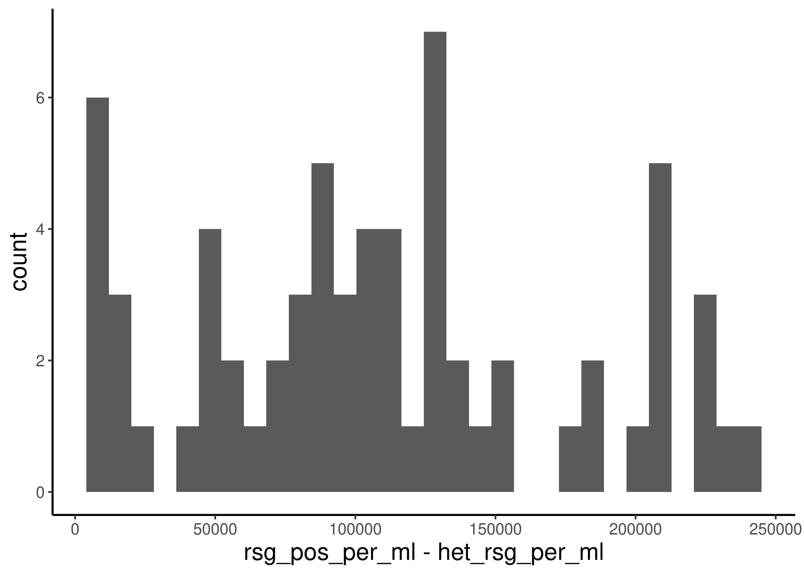
# GoodWe’d like to see no big changes between replicates. Overall this is true, except for one sample - what’s going on there?
rsg_final %>%
separate_wider_delim(Sample_ID, delim = "_", names = c("x","y","z", "Station", "w", "Depth", "Replicate")) %>%
ggplot(aes(x = Replicate, y = rsg_pos_per_ml, label = paste(Station, Depth))) +
geom_text()rsg_final %>%
separate_wider_delim(Sample_ID, delim = "_", names = c("x","y","z", "Station", "w", "Depth", "Replicate")) %>%
ggplot(aes(x = Replicate, y = rsg_total_per_ml, label = paste(Station, Depth))) +
geom_text()Huh, it belongs to 59 E -> a major bloom sample in the western basin. It’s total cell count is normal, but its RSG staining is just very very low. I’ve very suspicious of that big drop off in replicate two, as it places it way below the other samples in the eastern basin. I’m guessing there was a pipetting error in the staining of that sample. I’m going to discard that measurement.
rsg_final %>%
dplyr::filter(Sample_ID == "AAM_ERI_20240913_59_FC_EW_2")# A tibble: 1 × 7
Sample_ID rsg_total_per_ml rsg_pos_per_ml rsg_perc_pos het_rsg_per_ml
<chr> <dbl> <dbl> <dbl> <dbl>
1 AAM_ERI_20240913_… 5074041. 122663. 0.0242 70801.
# ℹ 2 more variables: het_rsg_perc_pos <dbl>, rsg_mfi <dbl>rsg_final <- rsg_final %>%
dplyr::filter(Sample_ID != "AAM_ERI_20240913_59_FC_EW_2")Joining pigments and cell counts and rsg
cells_for_join <-
cell_counts_full %>%
dplyr::filter(gate == "inclusive") %>%
group_by(Sample_ID) %>%
summarize(avg_cells_per_ml = mean(cells_per_ml)) %>%
ungroup() %>%
select(Sample_ID, avg_cells_per_ml)
pig_final <-
pigment_counts %>%
left_join(cells_for_join) %>%
left_join(rsg_final) %>%
mutate(perc_pig = avg_pig_per_ml / avg_cells_per_ml)Plotting results
pig_final %>%
ggplot(aes(y = Gate, x = avg_pig_per_ml)) +
ggbeeswarm::geom_beeswarm() +
scale_x_log10()Incorporating flow data into our physeq
Now, we want to bring our flow data into our physeq.
wide_pig <- pig_final %>%
select(-perc_pig) %>%
pivot_wider(names_from = "Gate", values_from = c("avg_pig_per_ml"))
pig_for_join <- wide_pig %>%
separate_wider_delim(Sample_ID, delim = "_", names = c("a","b","Date", "Station_ID","c","Depth","e")) %>%
mutate(Month = case_when(str_detect(Date, "202405") ~ "May",
str_detect(Date, "202408") ~ "August",
str_detect(Date, "202409") ~ "September"),
Depth_Class = ifelse(Depth == "EW", "S","B"),
Rep_ID = paste(Month, Station_ID, Depth_Class, sep = "_"),
total_chl_counts = pig_counts_chl_big + pig_counts_chl_small) %>%
select(Rep_ID, avg_cells_per_ml:pig_counts_chl_small, total_chl_counts) %>%
group_by(Rep_ID)%>%
summarize(across(c(avg_cells_per_ml:pig_counts_chl_small, total_chl_counts), \(x)mean(x, na.rm = TRUE)))
meta_w_flow <- sample_data(meta_physeq) %>%
data.frame() %>%
left_join(pig_for_join, by = "Rep_ID")
row.names(meta_w_flow) <- meta_w_flow$DNA_ID
flow_physeq <- meta_physeq
flow_physeq@sam_data <- NULL
flow_physeq@sam_data <- sample_data(meta_w_flow)
head(sample_data(flow_physeq)) Sample_ID DNA_ID input filtered denoisedF
KH_D001 AAM_ERI_20240522_15_FP_ET_1 KH_D001 241601 158738 158174
KH_D009 AAM_ERI_20240521_43_FP_ET_1 KH_D009 869027 573287 571578
KH_D017 AAM_ERI_20240522_936_FP_ET_1 KH_D017 459535 302302 301175
KH_D025 AAM_ERI_20240814_15_FP_ET_1 KH_D025 751735 493259 490103
KH_D032 AAM_ERI_20240810_59_FP_ET_1 KH_D032 753166 495997 490076
KH_D040 AAM_ERI_20240813_95_FP_ET_1 KH_D040 518358 342765 341346
denoisedR merged nochim perc_reads_retained Station_ID Date Depth
KH_D001 157756 155519 131823 54.56227 15 20240522 5
KH_D009 572130 566261 513112 59.04443 43 20240521 5
KH_D017 300956 297611 261488 56.90274 936 20240522 5
KH_D025 490271 484355 454845 60.50603 15 20240813 5
KH_D032 490094 480124 439695 58.37956 59 20240810 5
KH_D040 341240 337283 314764 60.72328 95 20240813 5
Station_Name Water_Surface_Temp_C Latitude Longitude Month
KH_D001 ER15M 15.15 42.50150 -79.89365 May
KH_D009 ER43 14.00 41.79217 -81.946667 May
KH_D017 ECSER936n 16.50 42.47545 -79.406633 May
KH_D025 ER 15M 23.43 42.51670 -79.893 August
KH_D032 ER 59 24.87 41.72723 -83.150467 August
KH_D040 ECS ER 95B 22.45 42.00025 -80.6666 August
Depth_Class Rep_ID Basin
KH_D001 S May_15_S E
KH_D009 S May_43_S C
KH_D017 S May_936_S E
KH_D025 S August_15_S E
KH_D032 S August_59_S W
KH_D040 S August_95_S C
Notes
KH_D001 NA NA Integrated sample; discrete depths separated by semi-colon NA
KH_D009 NA NA Integrated sample; discrete depths separated by semi-colon NA
KH_D017 NA NA Integrated sample; discrete depths separated by semi-colon NA
KH_D025 did vortex step before incubating PW1 at 65C Dates coerced to be consistent with station log - not within names but within the "Date_COllected" columns Integrated sample; discrete depths separated by semi-colon NA
KH_D032 Microcystis observed on filter. Spin column from 178030015_2. NA Integrated sample; discrete depths separated by semi-colon Station pretty turbid! Visible cyanobacterial colonies
KH_D040 Microcystis observed on filter. Did vortex step before incubating PW1 at 65C. NA Integrated sample; discrete depths separated by semi-colon NA
Microcystin_Total Anatoxin_Total Toxins_Measured ctd_temperature
KH_D001 NA NA <NA> 13.69299
KH_D009 NA NA <NA> 12.95048
KH_D017 NA NA <NA> 16.18748
KH_D025 0.00 0 Yes 23.08416
KH_D032 0.29 0 Yes 24.88106
KH_D040 0.00 0 Yes 22.59540
ctd_conductivity ctd_par ctd_beamAttenuation ctd_beamTransmission
KH_D001 208.3658 542.69814 1.3261095 71.7911182
KH_D009 199.3142 7436.02379 0.9637224 78.5902434
KH_D017 226.9756 9392.35090 1.4161247 70.3501944
KH_D025 259.5704 11.69799 1.4586229 69.4491679
KH_D032 299.5597 10.71339 21.2761746 0.5192135
KH_D040 255.5142 5552.73318 1.3819374 70.8042061
ctd_fluorescence ctd_spar ctd_upoly ctd_oxygen
KH_D001 0.5861290 56.35908 0.05770618 11.960735
KH_D009 0.2963258 1773.08637 0.05826155 11.074245
KH_D017 0.3674701 614.70432 0.05827895 10.746235
KH_D025 1.4322630 0.00000 0.05921820 8.389546
KH_D032 1.7856339 0.00000 0.05712378 7.343813
KH_D040 1.5351549 2093.70849 0.03929049 8.469209
ctd_specificConductance ctd_salinity nh4_ug_n_l n_ox_ug_n_l srp_ug_p_l
KH_D001 269.2239 1564068 13.5 92.3 1.1300000
KH_D009 262.5640 1464744 15.3 175.0 0.4000000
KH_D017 275.5135 1664741 10.1 450.0 0.4000000
KH_D025 269.8815 1567115 NA 24.5 0.2500000
KH_D032 300.2373 2050998 NA 467.0 0.9303333
KH_D040 268.3940 1546603 NA 14.2 0.2500000
tn_ug_n_l tp_ug_p_l k_mg_l na_mg_l ca_mg_l mg_mg_l cl_mg_l
KH_D001 295.0000 6.31 1.310000 8.83200 30.18000 8.53000 15.9045
KH_D009 359.0000 6.16 1.307000 8.92800 27.26000 8.21600 15.3740
KH_D017 623.9368 6.00 1.448000 10.98800 30.20000 8.54000 19.0686
KH_D025 252.0000 4.80 1.470000 9.54000 32.70000 9.03000 16.0500
KH_D032 991.3333 46.75 2.063333 12.23333 33.16667 10.93333 19.9000
KH_D040 294.0000 5.40 NaN NaN NaN NaN 15.6000
so4_mg_l doc_mg_c_l si_mg_si_o2_l chl_a_ug_l po_p_ug_p_l po_n_ug_n_l
KH_D001 19.4430 2.688664 0.4146043 2.76000 242 1200
KH_D009 19.0292 2.663076 0.7022667 1.43000 248 991
KH_D017 20.2942 2.834628 0.4163014 1.52000 193 1130
KH_D025 NA NA 0.1215000 3.99800 NA NA
KH_D032 NA NA 1.2513333 14.63633 NA NA
KH_D040 NA NA 0.3940000 4.90700 NA NA
pH np_ratio avg_cells_per_ml rsg_total_per_ml rsg_pos_per_ml
KH_D001 NA 103.52049 3875639 NaN NaN
KH_D009 NA 129.04685 6116420 NaN NaN
KH_D017 NA 230.26240 3626153 NaN NaN
KH_D025 8.535000 116.25000 4223245 NaN NaN
KH_D032 8.506667 46.95391 17326454 NaN NaN
KH_D040 8.350000 120.55556 5654715 NaN NaN
rsg_perc_pos het_rsg_per_ml het_rsg_perc_pos rsg_mfi pig_counts_chl_big
KH_D001 NaN NaN NaN NaN 3403.400
KH_D009 NaN NaN NaN NaN 1174.507
KH_D017 NaN NaN NaN NaN 3566.897
KH_D025 NaN NaN NaN NaN 6026.020
KH_D032 NaN NaN NaN NaN 53403.350
KH_D040 NaN NaN NaN NaN 7874.533
pig_counts_chl_small total_chl_counts
KH_D001 8628.62 12032.02
KH_D009 14958.28 16132.78
KH_D017 16723.37 20290.27
KH_D025 141921.78 147947.80
KH_D032 127887.76 181291.11
KH_D040 128668.54 136543.07Plotting with our flow_physeq
meta_w_flow %>%
filter(DNA_ID != "KH_D076", Depth_Class == "S") %>%
mutate(Month = factor(Month, levels = c("May","August","September"))) %>%
ggplot(aes(x = Month, y = avg_cells_per_ml/1e6)) +
geom_boxplot() +
stat_compare_means(method = "wilcox", comparisons = list(c(1,2), c(2,3), c(1,3)), label = "p.signif") +
ggbeeswarm::geom_beeswarm() +
labs(x = "", y = "Cells/ml (millions)")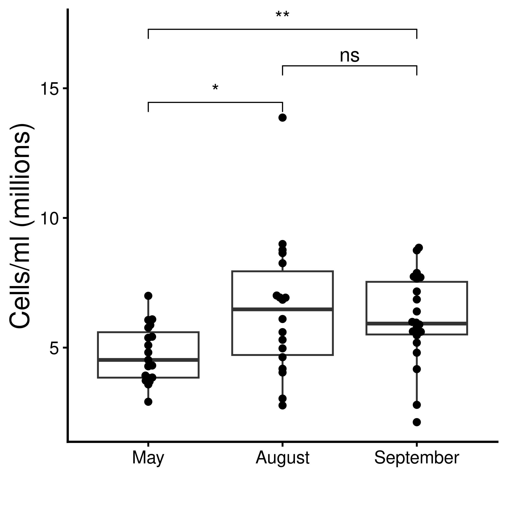
meta_w_flow %>%
filter(DNA_ID != "KH_D076", Depth_Class == "S") %>%
mutate(Month = factor(Month, levels = c("May","August","September"))) %>%
ggplot(aes(x = Month, y = total_chl_counts/1e6)) +
geom_boxplot() +
stat_compare_means(method = "wilcox", comparisons = list(c(1,2), c(2,3), c(1,3)), label = "p.signif") +
ggbeeswarm::geom_beeswarm() +
labs(x = "", y = "Chl+ Cells/ml (millions)")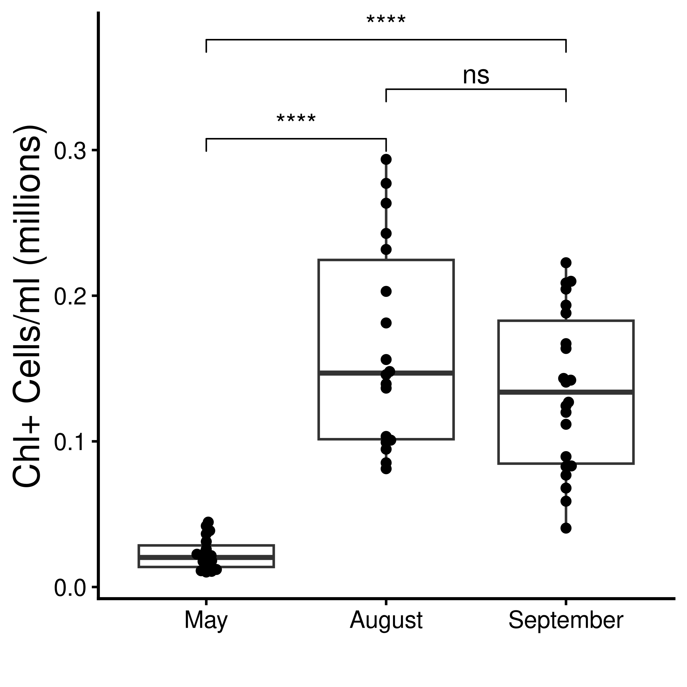
meta_w_flow %>%
filter(DNA_ID != "KH_D076", Depth_Class == "S") %>%
mutate(Month = factor(Month, levels = c("May","August","September"))) %>%
ggplot(aes(x = Month, y = pig_counts_chl_big/1e6)) +
geom_boxplot() +
stat_compare_means(method = "wilcox", comparisons = list(c(1,2), c(2,3), c(1,3)), label = "p.signif") +
ggbeeswarm::geom_beeswarm() +
labs(x = "", y = "Large Chl+Cells/ml (millions)")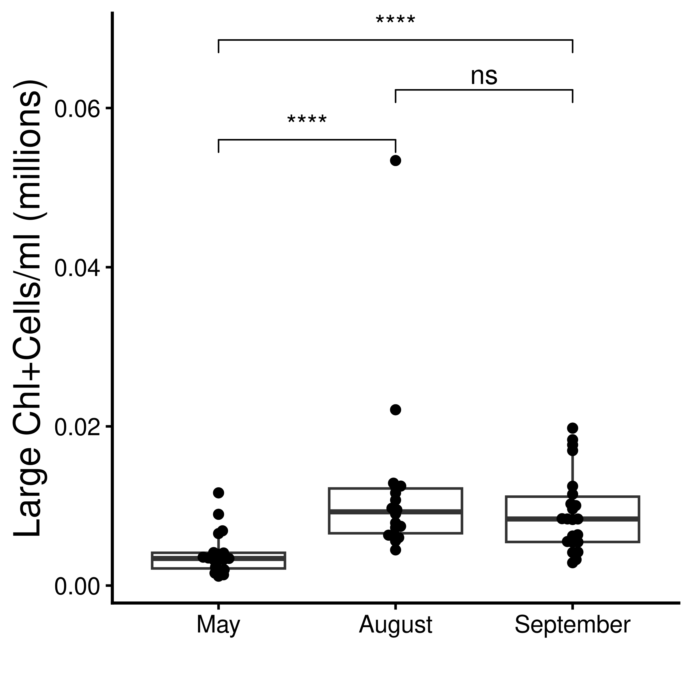
meta_w_flow %>%
filter(DNA_ID != "KH_D076", Depth_Class == "B") %>%
mutate(Month = factor(Month, levels = c("May","August","September"))) %>%
filter(Month!="May") %>%
ggplot(aes(x = Basin, y = avg_cells_per_ml)) +
geom_boxplot() +
stat_compare_means(method = "wilcox", comparisons = list(c(1,2)), label = "p.signif") +
scale_y_continuous(labels = scales::unit_format(unit = "M", scale = 1e-6), expand = expansion(mult = c(0,0.1))) +
ggbeeswarm::geom_beeswarm() +
facet_wrap(~Month, scales = "free") +
theme(strip.text = element_blank(),
axis.title = element_blank()) 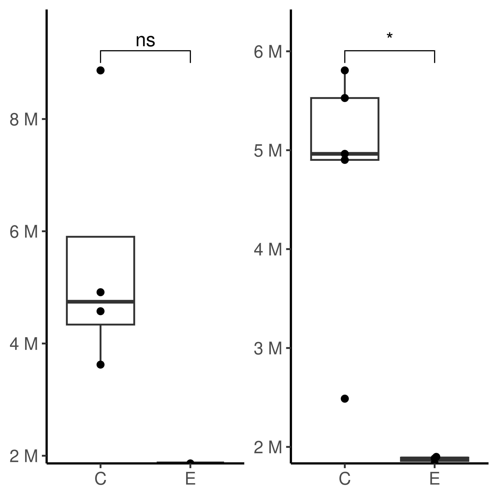
meta_w_flow %>%
filter(DNA_ID != "KH_D076", Depth_Class == "B") %>%
mutate(Month = factor(Month, levels = c("May","August","September"))) %>%
filter(Month!="May") %>%
ggplot(aes(x = Basin, y = total_chl_counts)) +
geom_boxplot() +
stat_compare_means(method = "wilcox", comparisons = list(c(1,2)), label = "p.signif") +
scale_y_continuous(labels = scales::unit_format(unit = "K", scale = 1e-3), expand = expansion(mult = c(0,0.1))) +
ggbeeswarm::geom_beeswarm() +
facet_wrap(~Month, scales = "free") +
theme(strip.text = element_blank(),
axis.title = element_blank()) 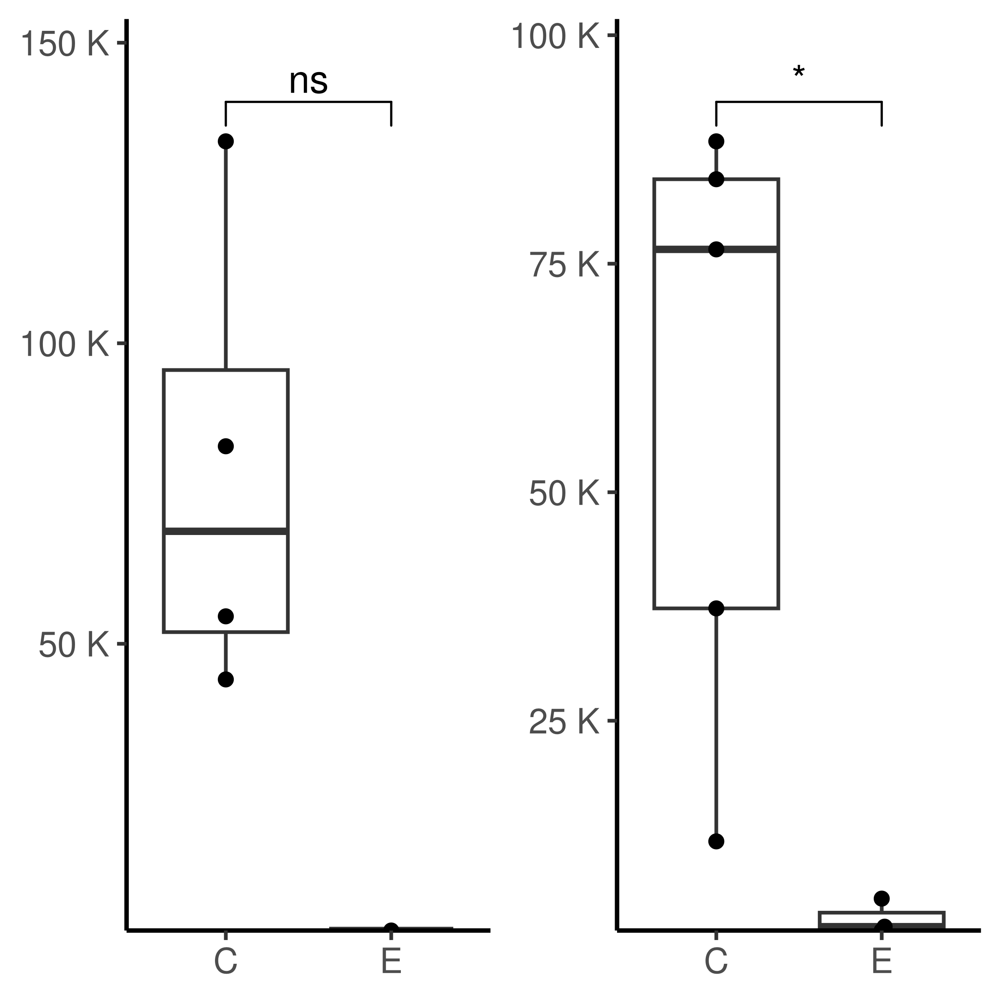
meta_w_flow %>%
filter(DNA_ID != "KH_D076", Depth_Class == "B") %>%
mutate(Month = factor(Month, levels = c("May","August","September"))) %>%
filter(Month!="May") %>%
ggplot(aes(x = Basin, y = pig_counts_chl_big)) +
geom_boxplot() +
stat_compare_means(method = "wilcox", comparisons = list(c(1,2)), label = "p.signif") +
scale_y_continuous(labels = scales::unit_format(unit = "K", scale = 1e-3), expand = expansion(mult = c(0,0.1))) +
ggbeeswarm::geom_beeswarm() +
facet_wrap(~Month, scales = "free") +
theme(strip.text = element_blank(),
axis.title = element_blank()) 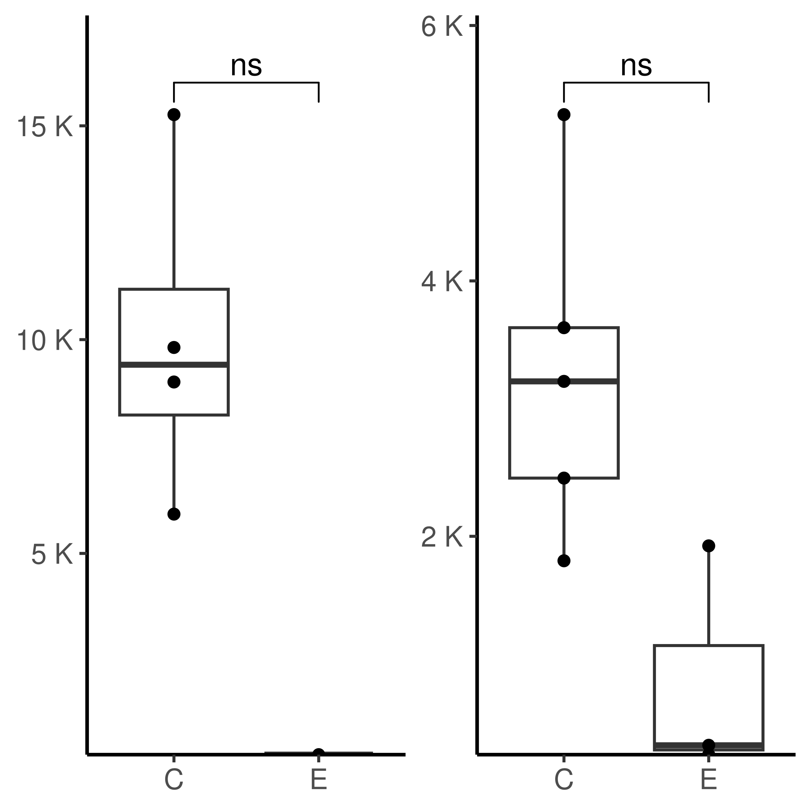
meta_w_flow %>%
filter(DNA_ID != "KH_D076", Depth_Class == "B") %>%
mutate(Month = factor(Month, levels = c("May","August","September"))) %>%
ggplot(aes(x = Month, y = avg_cells_per_ml/1e6)) +
geom_boxplot() +
stat_compare_means(method = "wilcox", comparisons = list(c(1,2), c(2,3), c(1,3)), label = "p.signif") +
ggbeeswarm::geom_beeswarm() +
labs(x = "", y = "Cells/ml (millions)")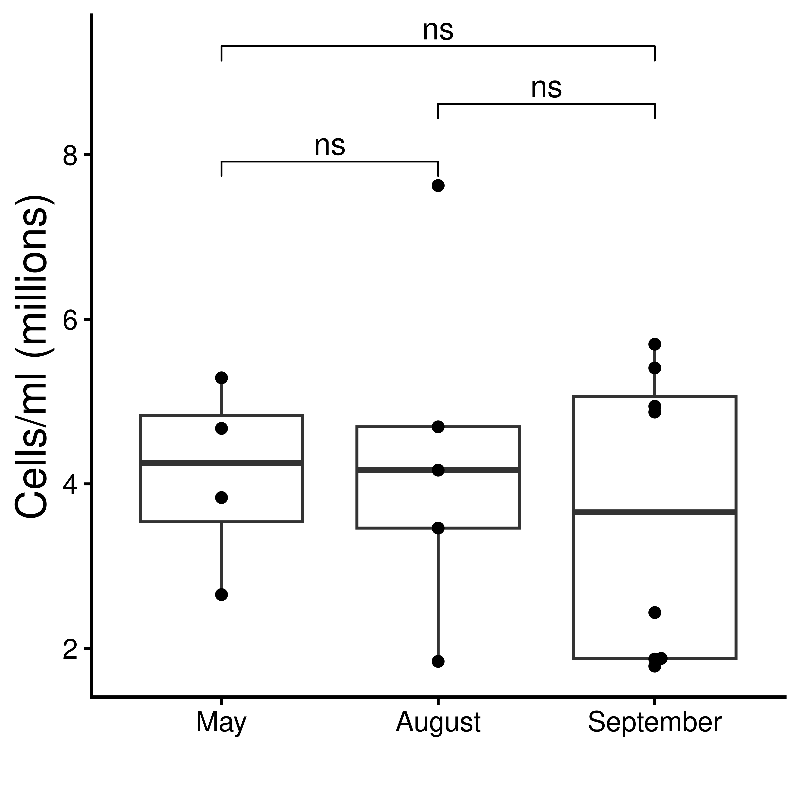
meta_w_flow %>%
filter(DNA_ID != "KH_D076", Depth_Class == "B") %>%
mutate(Month = factor(Month, levels = c("May","August","September"))) %>%
ggplot(aes(x = Month, y = total_chl_counts/1e6)) +
geom_boxplot() +
stat_compare_means(method = "wilcox", comparisons = list(c(1,2), c(2,3), c(1,3)), label = "p.signif") +
ggbeeswarm::geom_beeswarm() +
labs(x = "", y = "Chl+ Cells/ml (millions)")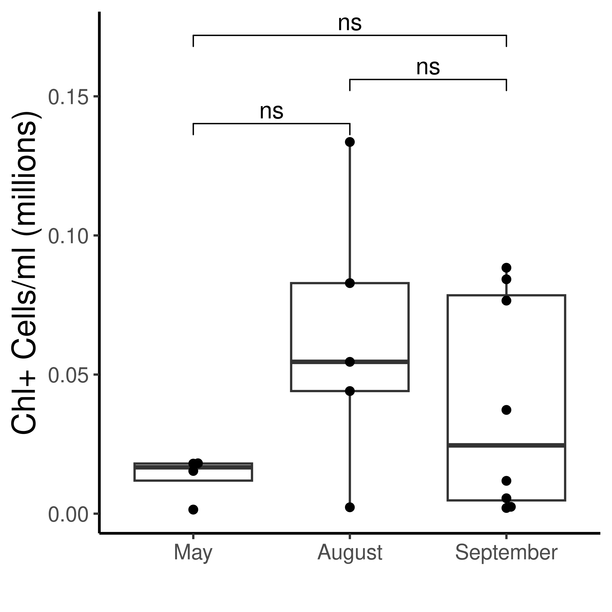
meta_w_flow %>%
filter(DNA_ID != "KH_D076", Depth_Class == "B") %>%
mutate(Month = factor(Month, levels = c("May","August","September"))) %>%
ggplot(aes(x = Month, y = pig_counts_chl_big/1e6)) +
geom_boxplot() +
stat_compare_means(method = "wilcox", comparisons = list(c(1,2), c(2,3), c(1,3)), label = "p.signif") +
ggbeeswarm::geom_beeswarm() +
labs(x = "", y = "Large Chl+Cells/ml (millions)")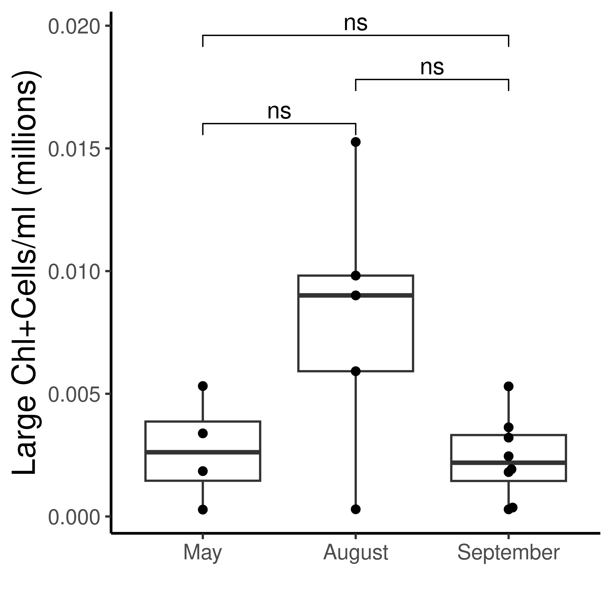
meta_w_flow %>%
filter(DNA_ID != "KH_D076", Depth_Class == "S", Month != "May") %>%
mutate(Month = factor(Month, levels = c("August","September")),
Basin = factor(Basin, levels = c("W","C","E"))) %>%
ggplot(aes(x = Basin, y = avg_cells_per_ml)) +
stat_summary(geom = "errorbar", fun.min = mean, fun.max = mean, width = 0.5, linewidth = 1)+
stat_summary(geom = "errorbar", fun.min = \(x)mean(x)-sd(x), fun.max = \(x)mean(x) + sd(x), width = 0.3, linewidth = .25)+
scale_y_continuous(labels = scales::unit_format(unit = "M", scale = 1e-6), expand = expansion(mult = c(0,0.1))) +
stat_compare_means(method = "wilcox", comparisons = list(c(1,2), c(2,3), c(1,3)), label = "p.signif") +
ggbeeswarm::geom_beeswarm() +
labs(x = "Basin") +
facet_wrap(~Month, scales = "free") +
theme(strip.text = element_blank(),
axis.title = element_blank()) meta_w_flow %>%
filter(DNA_ID != "KH_D076", Depth_Class == "S", Month != "May") %>%
mutate(Month = factor(Month, levels = c("August","September")),
Basin = factor(Basin, levels = c("W","C","E"))) %>%
ggplot(aes(x = Basin, y = total_chl_counts)) +
stat_summary(geom = "errorbar", fun.min = mean, fun.max = mean, width = 0.5, linewidth = 1)+
stat_summary(geom = "errorbar", fun.min = \(x)mean(x)-sd(x), fun.max = \(x)mean(x) + sd(x), width = 0.3, linewidth = .25)+
scale_y_continuous(labels = scales::unit_format(unit = "M", scale = 1e-6), expand = expansion(mult = c(0,0.1))) +
stat_compare_means(method = "wilcox", comparisons = list(c(1,2), c(2,3), c(1,3)), label = "p.signif") +
ggbeeswarm::geom_beeswarm() +
labs(x = "Basin") +
facet_wrap(~Month, scales = "free") +
theme(strip.text = element_blank(),
axis.title = element_blank()) meta_w_flow %>%
filter(DNA_ID != "KH_D076", Depth_Class == "S", Month != "May") %>%
mutate(Month = factor(Month, levels = c("August","September")),
Basin = factor(Basin, levels = c("W","C","E"))) %>%
ggplot(aes(x = Basin, y = pig_counts_chl_big)) +
stat_summary(geom = "errorbar", fun.min = mean, fun.max = mean, width = 0.5, linewidth = 1)+
stat_summary(geom = "errorbar", fun.min = \(x)mean(x)-sd(x), fun.max = \(x)mean(x) + sd(x), width = 0.3, linewidth = .25)+
scale_y_continuous(labels = scales::unit_format(unit = "K", scale = 1e-3), expand = expansion(mult = c(0,0.1))) +
stat_compare_means(method = "wilcox", comparisons = list(c(1,2), c(2,3), c(1,3)), label = "p.signif") +
ggbeeswarm::geom_beeswarm() +
labs(x = "Basin") +
facet_wrap(~Month, scales = "free") +
theme(strip.text = element_blank(),
axis.title = element_blank()) ggsave("test.png", width = 4, height = 2)
save(meta_w_flow, file = "data/06_Flow_Cytometry/meta_w_flow.RData")Mapping Cell Counts
#ONLY DO THIS ON LOCAL
pacman::p_load(sf, terra, install = FALSE)
# Define some shapes and objects
raw_erie <- read_sf("data/spatial_imports/hydro_p_LakeErie/hydro_p_LakeErie.shp") %>%
st_transform(crs = "EPSG:4326")
erie_outline <- raw_erie %>%
st_union()
flow_sf <- meta_w_flow %>% dplyr::filter(!is.na(Longitude)) %>%
st_as_sf(coords = c("Longitude","Latitude"), crs = "EPSG:4326") %>%
dplyr::filter(DNA_ID != "KH_D076") %>%
mutate(Month = factor(Month, levels = c("May","August","September") ))flow_sf %>%
dplyr::filter(Depth_Class == "S", Month != "May") %>%
ggplot() +
geom_sf(data = erie_outline, fill = NA) +
geom_sf(aes(color = avg_cells_per_ml), size = 5, alpha = 1) +
scale_color_distiller(palette = "Spectral", na.value = "white", labels = scales::unit_format(unit = "M", scale = 1e-6)) +
labs(color = "Cells/ml") +
facet_wrap(~Month) +
theme(axis.line = element_blank(),
axis.text = element_blank(),
axis.ticks = element_blank(),
strip.text = element_blank())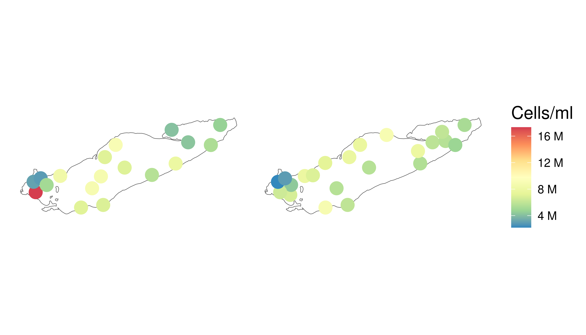
flow_sf %>%
dplyr::filter(Depth_Class == "S", Month != "May") %>%
ggplot() +
geom_sf(data = erie_outline, fill = NA) +
geom_sf(aes(color = total_chl_counts), size = 5, alpha = 1) +
scale_color_distiller(palette = "PRGn", na.value = "white", direction = 1, labels = scales::unit_format(unit = "M", scale = 1e-6)) +
labs(color = "Chl+ Cells/ml") +
facet_wrap(~Month) +
theme(axis.line = element_blank(),
axis.text = element_blank(),
axis.ticks = element_blank(),
strip.text = element_blank())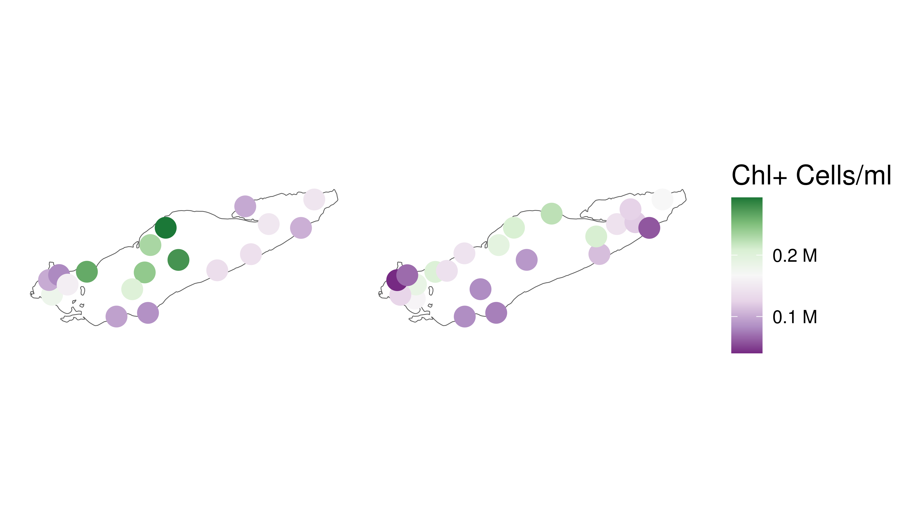
flow_sf %>%
dplyr::filter(Depth_Class == "S", Month != "May") %>%
ggplot() +
geom_sf(data = erie_outline, fill = NA) +
geom_sf(aes(color = pig_counts_chl_big), size = 5, alpha = 1) +
scale_color_distiller(palette = "Greens", na.value = "white", direction = 1, labels = scales::unit_format(unit = "K", scale = 1e-3)) +
labs(color = "Large\nChl+ Cells/ml") +
facet_wrap(~Month) +
theme(axis.line = element_blank(),
axis.text = element_blank(),
axis.ticks = element_blank(),
strip.text = element_blank())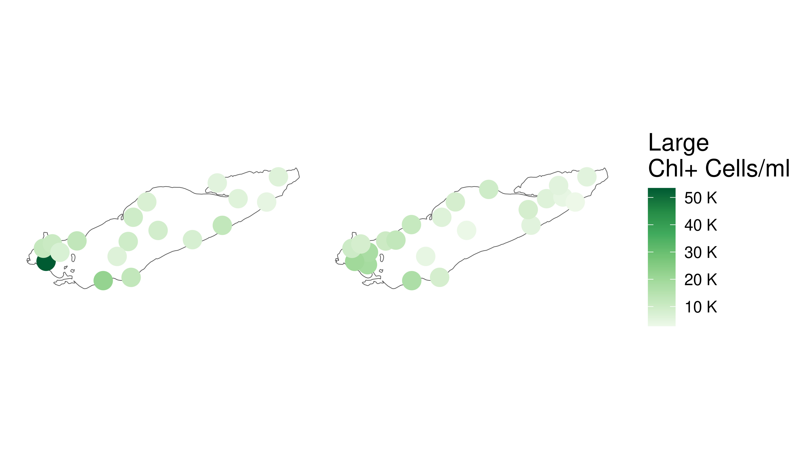
flow_sf %>%
dplyr::filter(Depth_Class == "S", Month != "May") %>%
ggplot() +
geom_sf(data = erie_outline, fill = NA) +
geom_sf(aes(color = rsg_pos_per_ml), size = 5, alpha = 1) +
scale_color_distiller(palette = "Spectral", na.value = "white", labels = scales::unit_format(unit = "M", scale = 1e-6)) +
labs(color = "RSG+\ncells/ml") +
facet_wrap(~Month) +
theme(axis.line = element_blank(),
axis.text = element_blank(),
axis.ticks = element_blank(),
strip.text = element_blank())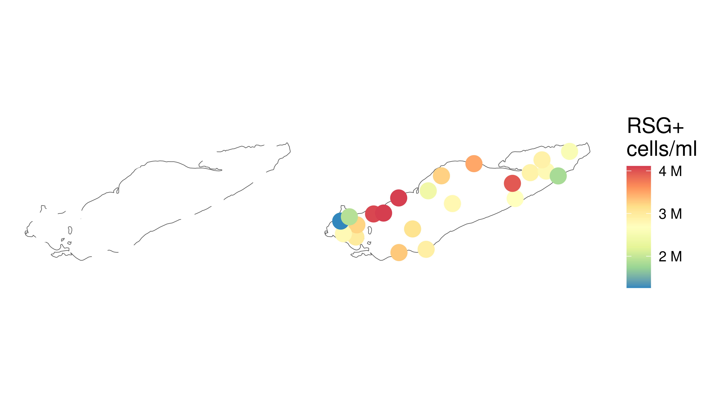
flow_sf %>%
dplyr::filter(Depth_Class == "S", Month != "May") %>%
ggplot() +
geom_sf(data = erie_outline, fill = NA) +
geom_sf(aes(color = rsg_perc_pos), size = 5, alpha = 1) +
scale_color_distiller(palette = "Spectral", na.value = "white") +
labs(color = "% RSG+") +
facet_wrap(~Month) +
theme(axis.line = element_blank(),
axis.text = element_blank(),
axis.ticks = element_blank(),
strip.text = element_blank())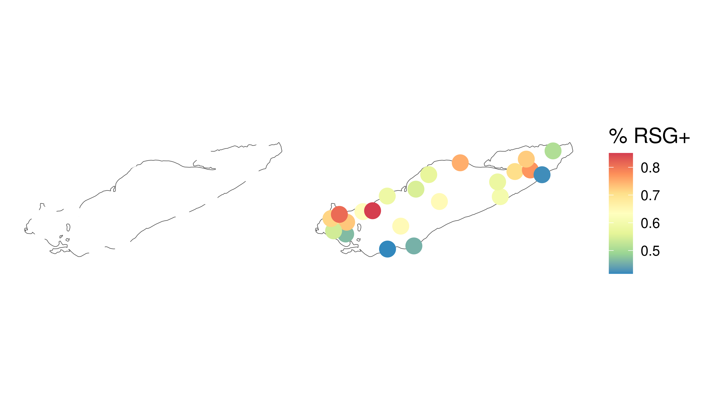
flow_sf %>%
dplyr::filter(Depth_Class == "B", Month != "May") %>%
ggplot() +
geom_sf(data = erie_outline, fill = NA) +
geom_sf(aes(color = avg_cells_per_ml), size = 5, alpha = 1) +
scale_color_distiller(palette = "Spectral", na.value = "white", labels = scales::unit_format(unit = "M", scale = 1e-6)) +
labs(color = "Cells/ml") +
facet_wrap(~Month) +
theme(axis.line = element_blank(),
axis.text = element_blank(),
axis.ticks = element_blank(),
strip.text = element_blank())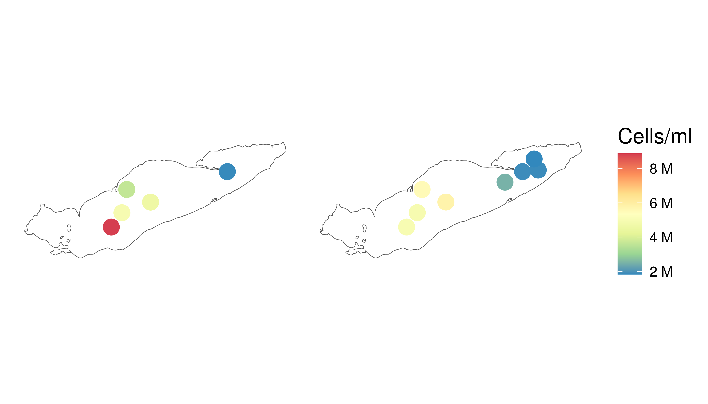
flow_sf %>%
dplyr::filter(Depth_Class == "B", Month != "May") %>%
ggplot() +
geom_sf(data = erie_outline, fill = NA) +
geom_sf(aes(color = total_chl_counts), size = 5, alpha = 1) +
scale_color_distiller(palette = "PRGn", na.value = "white", direction = 1, labels = scales::unit_format(unit = "K", scale = 1e-3)) +
labs(color = "Chl+ Cells/ml") +
facet_wrap(~Month) +
theme(axis.line = element_blank(),
axis.text = element_blank(),
axis.ticks = element_blank(),
strip.text = element_blank())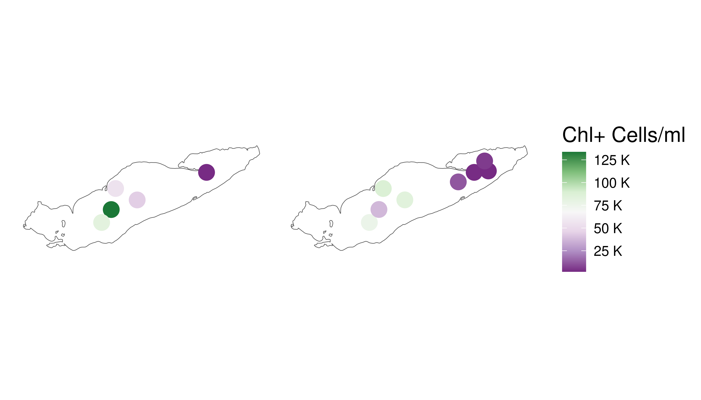
flow_sf %>%
dplyr::filter(Depth_Class == "B", Month != "May") %>%
ggplot() +
geom_sf(data = erie_outline, fill = NA) +
geom_sf(aes(color = pig_counts_chl_big), size = 5, alpha = 1) +
scale_color_distiller(palette = "Greens", na.value = "white", direction = 1, labels = scales::unit_format(unit = "K", scale = 1e-3)) +
labs(color = "Large\nChl+ Cells/ml") +
facet_wrap(~Month) +
theme(axis.line = element_blank(),
axis.text = element_blank(),
axis.ticks = element_blank(),
strip.text = element_blank())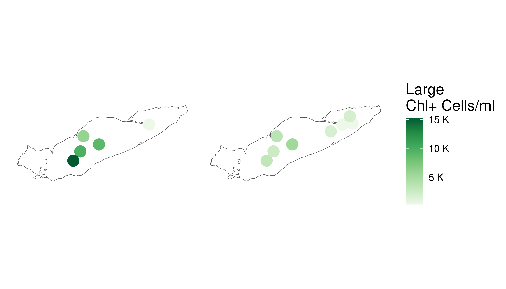
flow_sf %>%
dplyr::filter(Depth_Class == "B", Month != "May") %>%
ggplot() +
geom_sf(data = erie_outline, fill = NA) +
geom_sf(aes(color = rsg_pos_per_ml), size = 5, alpha = 1) +
scale_color_distiller(palette = "Spectral", na.value = "white", labels = scales::unit_format(unit = "M", scale = 1e-6)) +
labs(color = "RSG+\ncells/ml") +
facet_wrap(~Month) +
theme(axis.line = element_blank(),
axis.text = element_blank(),
axis.ticks = element_blank(),
strip.text = element_blank())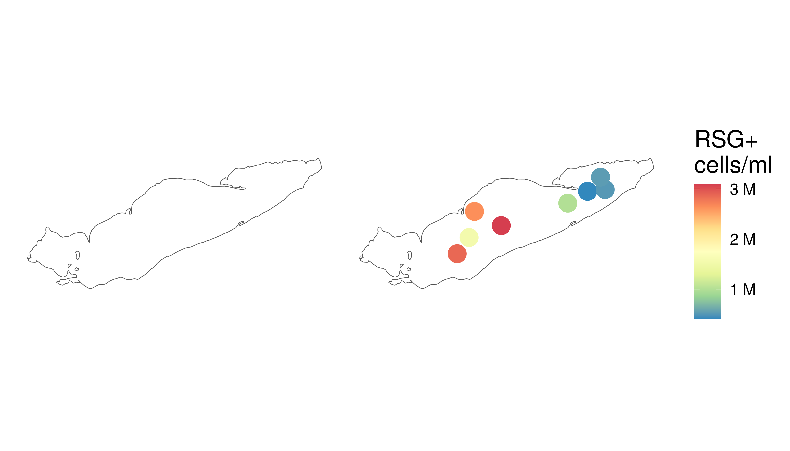
flow_sf %>%
dplyr::filter(Depth_Class == "B", Month != "May") %>%
ggplot() +
geom_sf(data = erie_outline, fill = NA) +
geom_sf(aes(color = rsg_perc_pos), size = 5, alpha = 1) +
scale_color_distiller(palette = "Spectral", na.value = "white") +
labs(color = "% RSG+") +
facet_wrap(~Month) +
theme(axis.line = element_blank(),
axis.text = element_blank(),
axis.ticks = element_blank(),
strip.text = element_blank())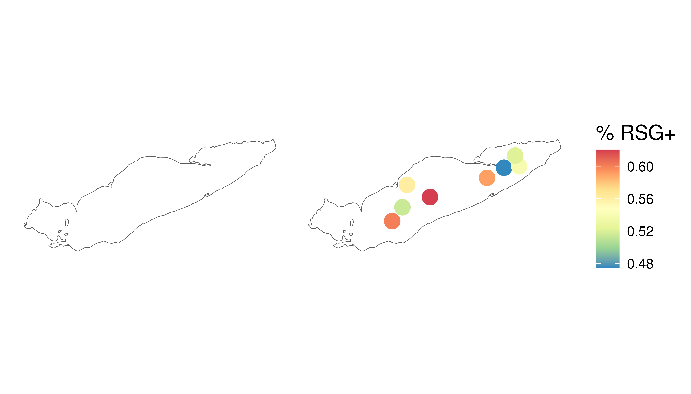
bottom_sf <- flow_sf %>%
dplyr::filter(Depth_Class == "B")
shift_bottom_sf <- bottom_sf
st_geometry(shift_bottom_sf) <- st_geometry(bottom_sf) + c(.06,-.03)
shift_bottom_sf <- st_set_crs(shift_bottom_sf, st_crs(bottom_sf))
flow_sf %>%
dplyr::filter(Depth_Class == "S", Month != "May") %>%
ggplot() +
geom_sf(data = erie_outline, fill = NA) +
geom_sf(data = filter(shift_bottom_sf, Month != "May"), aes(color = avg_cells_per_ml), size = 5, alpha = 1) +
geom_sf(aes(color = avg_cells_per_ml), size = 5, alpha = 1) +
scale_color_distiller(palette = "Spectral", na.value = "white", labels = scales::unit_format(unit = "M", scale = 1e-6)) +
labs(color = "Cells/ml") +
facet_wrap(~Month) +
theme(axis.line = element_blank(),
axis.text = element_blank(),
axis.ticks = element_blank(),
strip.text = element_blank())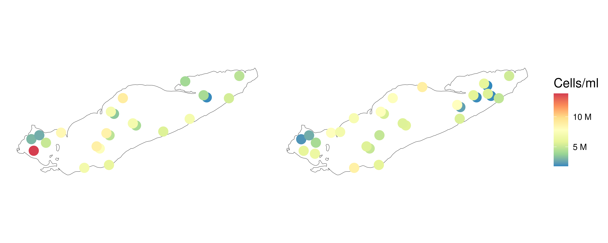
flow_sf %>%
dplyr::filter(Depth_Class == "S", Month != "May") %>%
ggplot() +
geom_sf(data = erie_outline, fill = NA) +
geom_sf(data = filter(shift_bottom_sf, Month != "May"), aes(color = total_chl_counts), size = 5, alpha = 1) +
geom_sf(aes(color = total_chl_counts), size = 5, alpha = 1) +
scale_color_distiller(palette = "PRGn", na.value = "white", direction = 1, labels = scales::unit_format(unit = "M", scale = 1e-6)) +
labs(color = "Chl+ Cells/ml") +
facet_wrap(~Month) +
theme(axis.line = element_blank(),
axis.text = element_blank(),
axis.ticks = element_blank(),
strip.text = element_blank())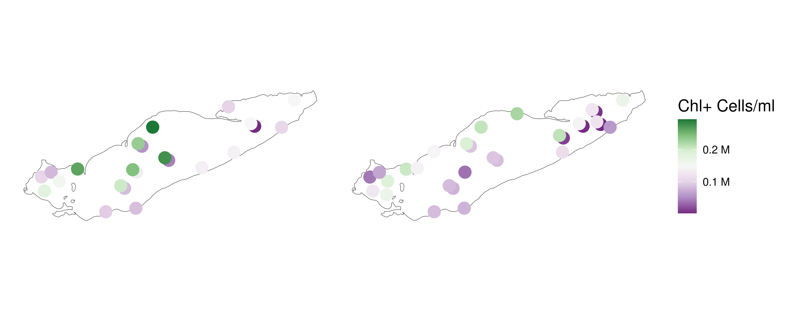
flow_sf %>%
dplyr::filter(Depth_Class == "S", Month != "May") %>%
ggplot() +
geom_sf(data = erie_outline, fill = NA) +
geom_sf(data = filter(shift_bottom_sf, Month != "May"), aes(color = pig_counts_chl_big), size = 5, alpha = 1) +
geom_sf(aes(color = pig_counts_chl_big), size = 5, alpha = 1) +
scale_color_distiller(palette = "Greens", na.value = "white", direction = 1, labels = scales::unit_format(unit = "K", scale = 1e-3)) +
labs(color = "Large\nChl+ Cells/ml") +
facet_wrap(~Month) +
theme(axis.line = element_blank(),
axis.text = element_blank(),
axis.ticks = element_blank(),
strip.text = element_blank())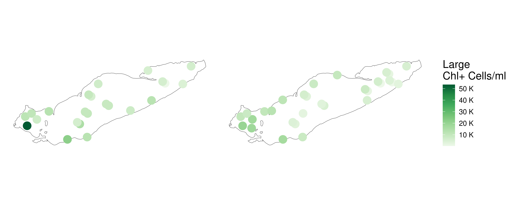
flow_sf %>%
dplyr::filter(Depth_Class == "S", Month != "May") %>%
ggplot() +
geom_sf(data = erie_outline, fill = NA) +
geom_sf(data = filter(shift_bottom_sf, Month != "May"), aes(color = rsg_pos_per_ml), size = 5, alpha = 1) +
geom_sf(aes(color = rsg_pos_per_ml), size = 5, alpha = 1) +
scale_color_distiller(palette = "Spectral", na.value = "white", labels = scales::unit_format(unit = "M", scale = 1e-6)) +
labs(color = "RSG+\ncells/ml") +
facet_wrap(~Month) +
theme(axis.line = element_blank(),
axis.text = element_blank(),
axis.ticks = element_blank(),
strip.text = element_blank())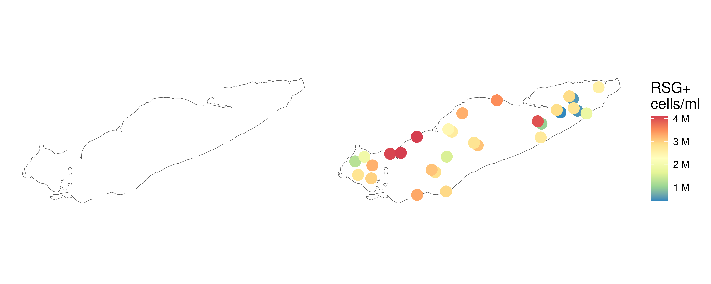
flow_sf %>%
dplyr::filter(Depth_Class == "S", Month != "May") %>%
ggplot() +
geom_sf(data = erie_outline, fill = NA) +
geom_sf(data = filter(shift_bottom_sf, Month != "May"), aes(color = rsg_perc_pos), size = 5, alpha = 1) +
geom_sf(aes(color = rsg_perc_pos), size = 5, alpha = 1) +
scale_color_distiller(palette = "Spectral", na.value = "white") +
labs(color = "% RSG+") +
facet_wrap(~Month) +
theme(axis.line = element_blank(),
axis.text = element_blank(),
axis.ticks = element_blank(),
strip.text = element_blank())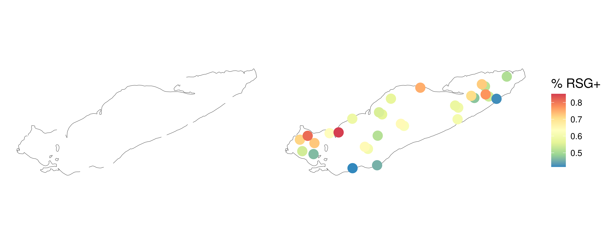
flow_sf %>%
dplyr::filter(Depth_Class == "S", Month != "May") %>%
ggplot() +
geom_sf(data = erie_outline, fill = NA) +
geom_sf(aes(color = tp_ug_p_l), size = 5, alpha = 1) +
scale_color_distiller(palette = "Spectral", na.value = "white") +
labs(color = "TP (ug P/L)") +
facet_wrap(~Month) +
theme(axis.line = element_blank(),
axis.text = element_blank(),
axis.ticks = element_blank(),
strip.text = element_blank())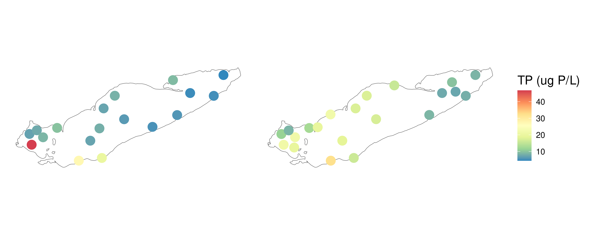
ggsave("test.png", width = 10, height = 4)
flow_sf %>%
dplyr::filter(Depth_Class == "S", Month != "May") %>%
ggplot() +
geom_sf(data = erie_outline, fill = NA) +
geom_sf(data = filter(shift_bottom_sf, Month != "May"), aes(color = tn_ug_n_l), size = 5, alpha = 1) +
geom_sf(aes(color = tn_ug_n_l), size = 5, alpha = 1) +
scale_color_distiller(palette = "Spectral", na.value = "white") +
labs(color = "TN (ug N/L)") +
facet_wrap(~Month) +
theme(axis.line = element_blank(),
axis.text = element_blank(),
axis.ticks = element_blank(),
strip.text = element_blank())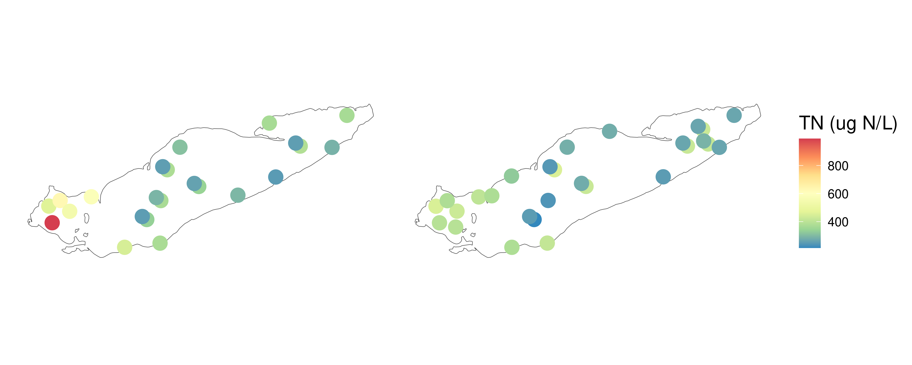
flow_sf %>%
dplyr::filter(Depth_Class == "S", Month != "May") %>%
ggplot() +
geom_sf(data = erie_outline, fill = NA) +
geom_sf(data = filter(shift_bottom_sf, Month != "May"), aes(color = pH), size = 5, alpha = 1) +
geom_sf(aes(color = pH), size = 5, alpha = 1) +
scale_color_distiller(palette = "Spectral", na.value = "white") +
labs(color = "pH") +
facet_wrap(~Month) +
theme(axis.line = element_blank(),
axis.text = element_blank(),
axis.ticks = element_blank(),
strip.text = element_blank())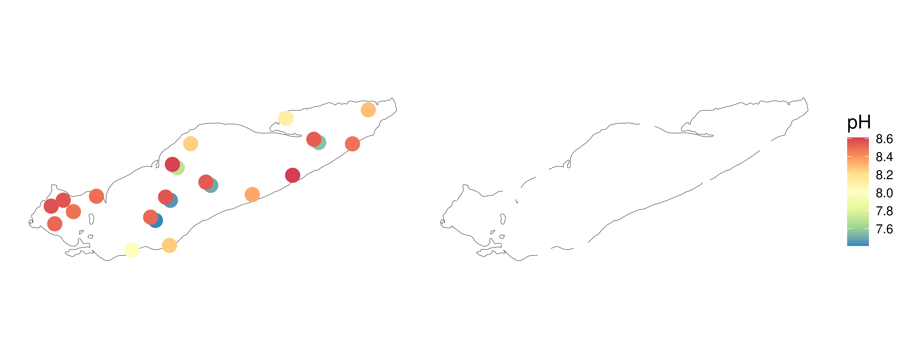
bottom_sf <- flow_sf %>%
dplyr::filter(Depth_Class == "B", Month == "May")
shift_bottom_sf <- bottom_sf
st_geometry(shift_bottom_sf) <- st_geometry(bottom_sf) + c(.06,-.03)
shift_bottom_sf <- st_set_crs(shift_bottom_sf, st_crs(bottom_sf))
flow_sf %>%
dplyr::filter(Depth_Class == "S", Month == "May") %>%
ggplot() +
geom_sf(data = erie_outline, fill = NA) +
geom_sf(data = shift_bottom_sf, aes(color = avg_cells_per_ml/1e6), size = 5, alpha = 1) +
geom_sf(aes(color = avg_cells_per_ml/1e6), size = 5, alpha = 1) +
scale_color_distiller(palette = "Spectral", na.value = "white") +
labs(color = "Cells/ml\n(millions)") +
theme(axis.line = element_blank(),
axis.text = element_blank(),
axis.ticks = element_blank(),
strip.text = element_blank())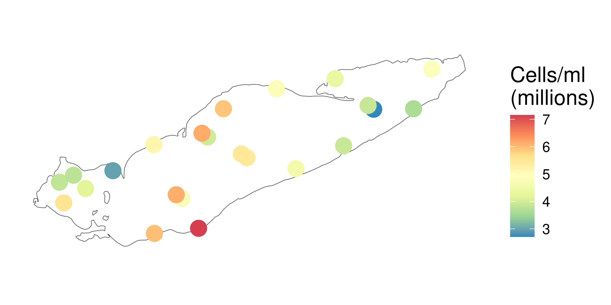
flow_sf %>%
dplyr::filter(Depth_Class == "S", Month == "May") %>%
ggplot() +
geom_sf(data = erie_outline, fill = NA) +
geom_sf(data = shift_bottom_sf, aes(color = total_chl_counts/1e6), size = 5, alpha = 1) +
geom_sf(aes(color = total_chl_counts/1e6), size = 5, alpha = 1) +
scale_color_distiller(palette = "PRGn", na.value = "white", direction = 1) +
labs(color = "Chl+ Cells/ml\n(millions)") +
theme(axis.line = element_blank(),
axis.text = element_blank(),
axis.ticks = element_blank(),
strip.text = element_blank())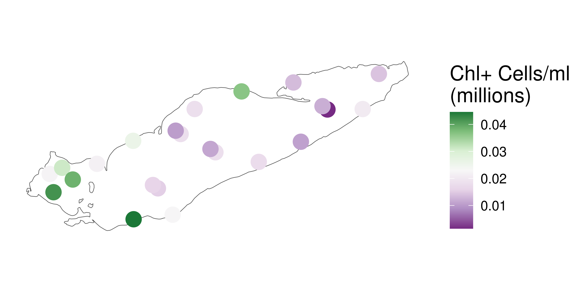
flow_sf %>%
dplyr::filter(Depth_Class == "S", Month == "May") %>%
ggplot() +
geom_sf(data = erie_outline, fill = NA) +
geom_sf(data = shift_bottom_sf, aes(color = pig_counts_chl_big/1e6), size = 5, alpha = 1) +
geom_sf(aes(color = pig_counts_chl_big/1e6), size = 5, alpha = 1) +
scale_color_distiller(palette = "Greens", na.value = "white", direction = 1) +
labs(color = "Large\nChl+ Cells/ml\n(millions)") +
theme(axis.line = element_blank(),
axis.text = element_blank(),
axis.ticks = element_blank(),
strip.text = element_blank())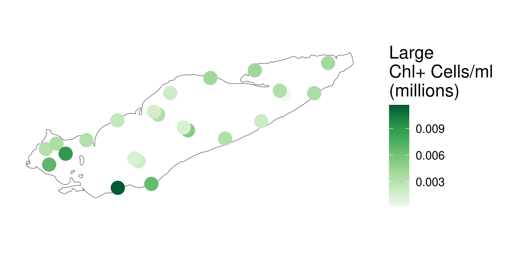
flow_sf %>%
dplyr::filter(Depth_Class == "S", Month != "May") %>%
ggplot() +
geom_sf(data = erie_outline, fill = NA) +
geom_sf(aes(color = Anatoxin_Total), size = 5, alpha = 1) +
scale_color_gradient(low = "white", high = "firebrick2", breaks = c(0,0.02,0.04)) +
facet_wrap(~Month) +
labs(color = "Anatoxins\n(μg/L)") +
theme(axis.line = element_blank(),
axis.text = element_blank(),
axis.ticks = element_blank(),
strip.text = element_blank())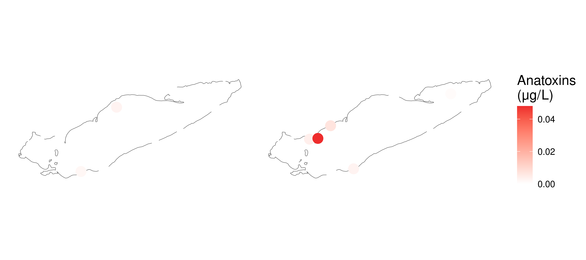
flow_sf %>%
dplyr::filter(Depth_Class == "S", Month != "May") %>%
ggplot() +
geom_sf(data = erie_outline, fill = NA) +
geom_sf(aes(color = Microcystin_Total), size = 5, alpha = 1) +
scale_color_gradient(low = "white", high = "forestgreen") +
facet_wrap(~Month) +
labs(color = "Microcystins\n(μg/L)") +
theme(axis.line = element_blank(),
axis.text = element_blank(),
axis.ticks = element_blank(),
strip.text = element_blank())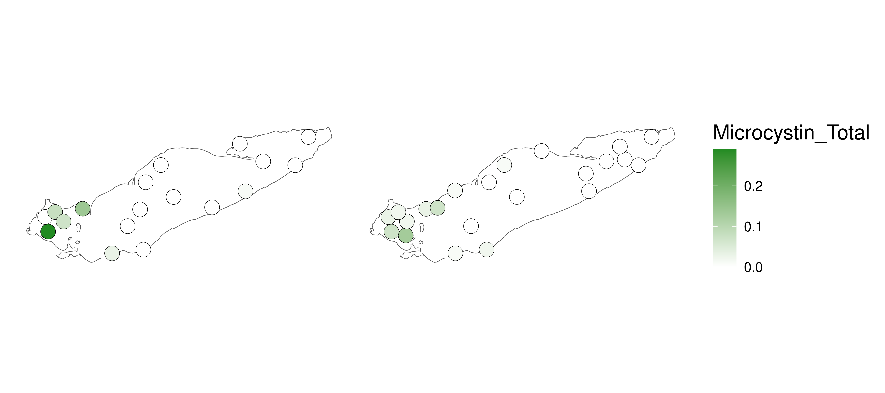
flow_sf %>%
dplyr::filter(Depth_Class == "S", Month == "May") %>%
ggplot() +
geom_sf(data = erie_outline, fill = NA) +
geom_sf(data = shift_bottom_sf, aes(color = avg_cells_per_ml/1e6), size = 5, alpha = 1) +
geom_sf(aes(color = avg_cells_per_ml/1e6), size = 5, alpha = 1) +
scale_color_distiller(palette = "Spectral", na.value = "white") +
labs(color = "Cells/ml\n(millions)") +
theme(axis.line = element_blank(),
axis.text = element_blank(),
axis.ticks = element_blank(),
strip.text = element_blank())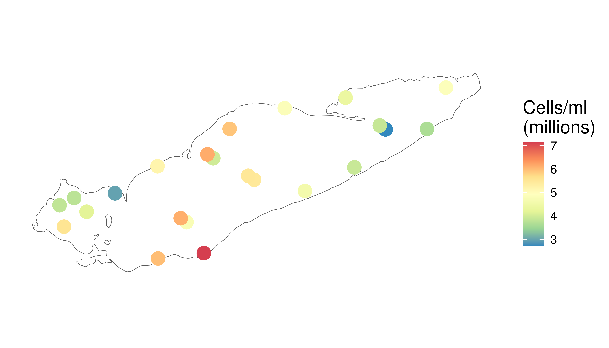
flow_sf %>%
dplyr::filter(Depth_Class == "S", Month == "September") %>%
ggplot() +
geom_sf(data = erie_outline, fill = NA) +
geom_sf(data = shift_bottom_sf, aes(color = rsg_pos_per_ml/1e6), size = 5, alpha = 1) +
geom_sf(aes(color = rsg_pos_per_ml/1e6), size = 5, alpha = 1) +
scale_color_distiller(palette = "Spectral", na.value = "white") +
labs(color = "RSG+ Cells/ml\n(millions)") +
theme(axis.line = element_blank(),
axis.text = element_blank(),
axis.ticks = element_blank(),
strip.text = element_blank())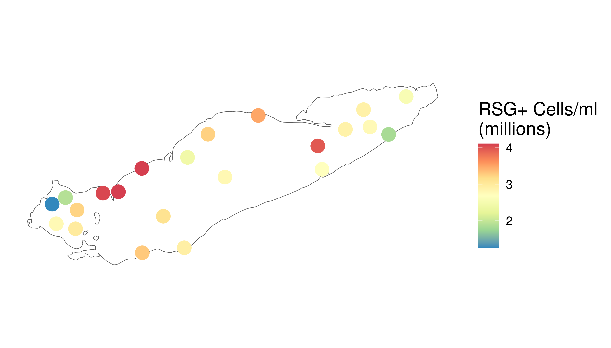
flow_sf %>%
dplyr::filter(Depth_Class == "S", Month == "September") %>%
ggplot() +
geom_sf(data = erie_outline, fill = NA) +
geom_sf(data = shift_bottom_sf, aes(color = rsg_perc_pos), size = 5, alpha = 1) +
geom_sf(aes(color = rsg_perc_pos), size = 5, alpha = 1) +
scale_color_distiller(palette = "Spectral", na.value = "white") +
labs(color = "% RSG+ Cells") +
theme(axis.line = element_blank(),
axis.text = element_blank(),
axis.ticks = element_blank(),
strip.text = element_blank())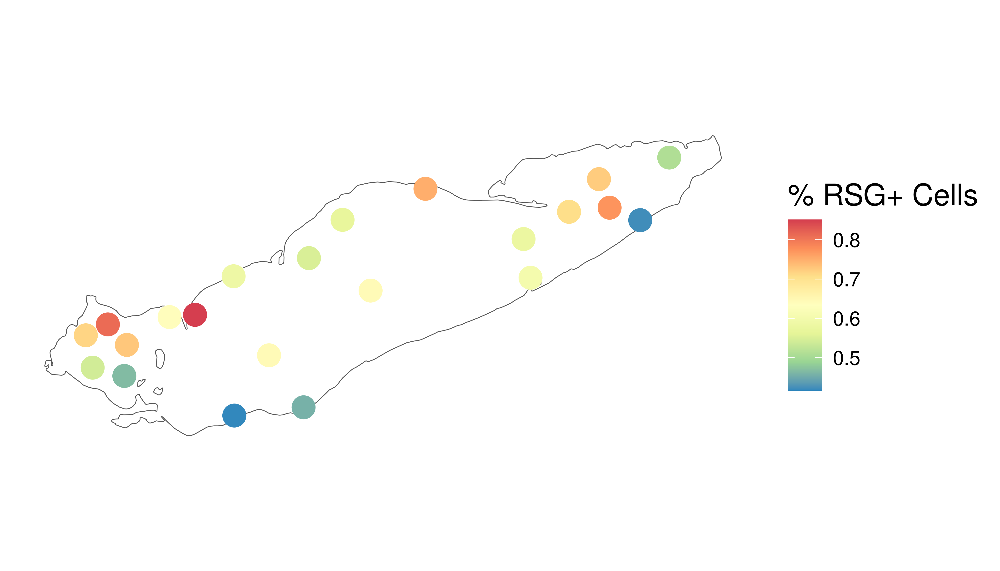
meta_w_flow %>%
filter(DNA_ID != "KH_D076", Depth_Class == "S", Month == "September") %>%
mutate(Month = factor(Month, levels = c("September")),
Basin = factor(Basin, levels = c("W","C","E"))) %>%
ggplot(aes(x = Basin, y = rsg_pos_per_ml)) +
stat_summary(geom = "errorbar", fun.min = mean, fun.max = mean, width = 0.5, linewidth = 1)+
stat_summary(geom = "errorbar", fun.min = \(x)mean(x)-sd(x), fun.max = \(x)mean(x) + sd(x), width = 0.3, linewidth = .25)+
scale_y_continuous(labels = scales::unit_format(unit = "M", scale = 1e-6), expand = expansion(mult = c(0,0.1))) +
stat_compare_means(method = "wilcox", comparisons = list(c(1,2), c(2,3), c(1,3)), label = "p.signif") +
ggbeeswarm::geom_beeswarm() +
labs(x = "Basin") +
facet_wrap(~Month, scales = "free") +
theme(strip.text = element_blank(),
axis.title = element_blank()) 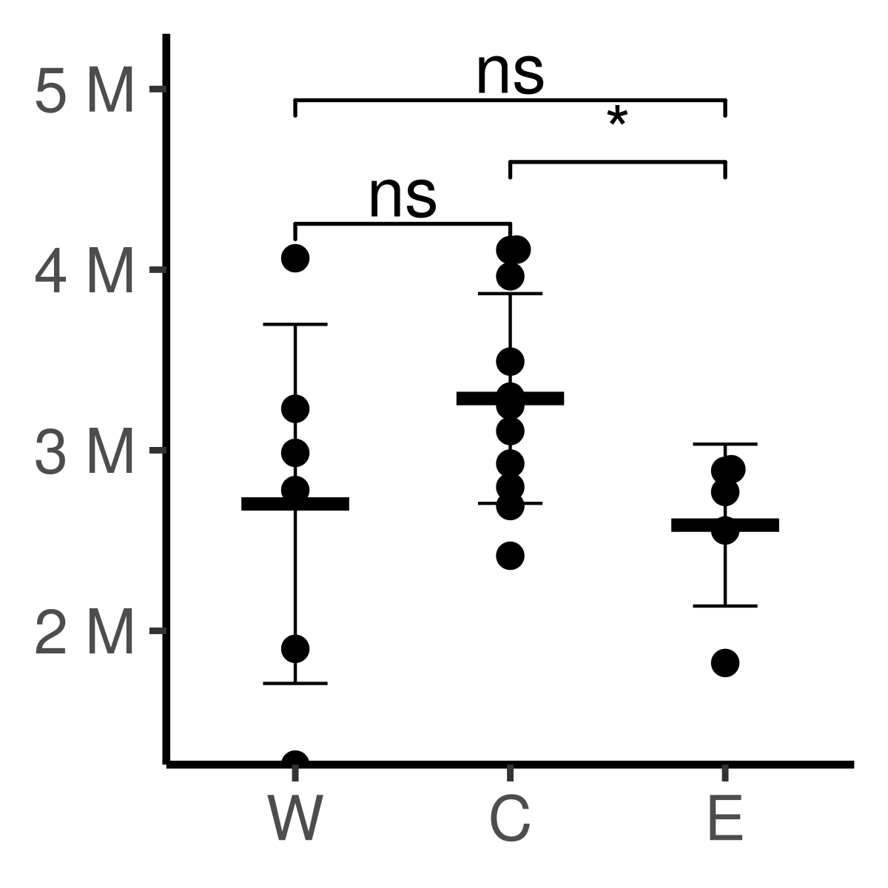
meta_w_flow %>%
filter(DNA_ID != "KH_D076", Depth_Class == "S", Month == "September") %>%
mutate(Month = factor(Month, levels = c("September")),
Basin = factor(Basin, levels = c("W","C","E"))) %>%
ggplot(aes(x = Basin, y = rsg_perc_pos)) +
stat_summary(geom = "errorbar", fun.min = mean, fun.max = mean, width = 0.5, linewidth = 1)+
stat_summary(geom = "errorbar", fun.min = \(x)mean(x)-sd(x), fun.max = \(x)mean(x) + sd(x), width = 0.3, linewidth = .25)+
scale_y_continuous(expand = expansion(mult = c(0,0.1))) +
stat_compare_means(method = "wilcox", comparisons = list(c(1,2), c(2,3), c(1,3)), label = "p.signif") +
ggbeeswarm::geom_beeswarm() +
labs(x = "Basin") +
facet_wrap(~Month, scales = "free") +
theme(strip.text = element_blank(),
axis.title = element_blank()) meta_w_flow %>%
ggplot(aes(x = total_chl_counts, y = avg_cells_per_ml - total_chl_counts)) +
geom_point() +
scale_y_log10() +
scale_x_log10() +
ggpubr::stat_cor(method = "spearman")
meta_w_flow %>%
ggplot(aes(x = total_chl_counts, y = avg_cells_per_ml - total_chl_counts)) +
geom_point() +
scale_y_log10() +
scale_x_log10() +
ggpubr::stat_cor(method = "spearman")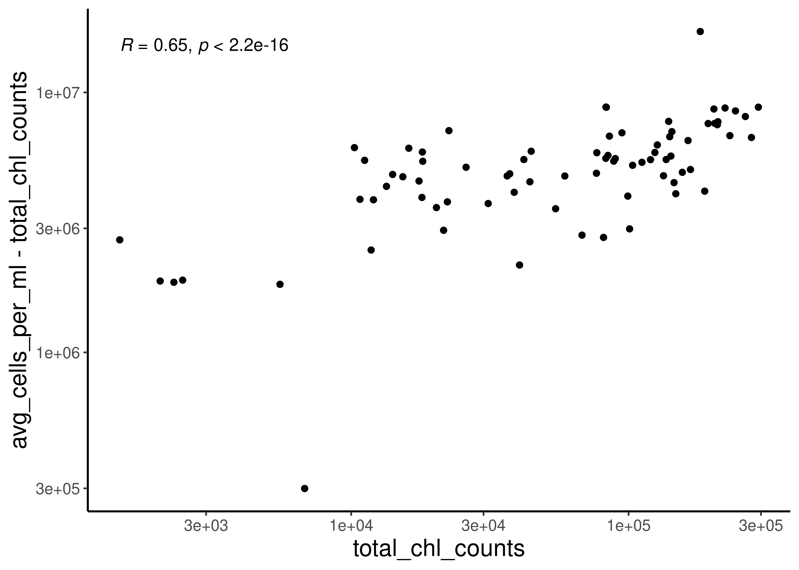
save(flow_physeq, file ="data/06_Flow_Cytometry/flow_physeq.RData")Session Information
# Reproducibility
devtools::session_info()─ Session info ───────────────────────────────────────────────────────────────
setting value
version R version 4.3.3 (2024-02-29)
os Rocky Linux 9.8 (Blue Onyx)
system x86_64, linux-gnu
ui X11
language (EN)
collate en_US.UTF-8
ctype en_US.UTF-8
tz America/New_York
date 2026-10-12
pandoc 3.1.1 @ /usr/lib/rstudio-server/bin/quarto/bin/tools/ (via rmarkdown)
─ Packages ───────────────────────────────────────────────────────────────────
package * version date (UTC) lib source
abind 1.4-8 2024-09-12 [2] CRAN (R 4.3.3)
ade4 1.7-24 2026-03-21 [1] CRAN (R 4.3.3)
ape 5.8-1 2024-12-16 [1] CRAN (R 4.3.3)
backports 1.5.1 2026-04-03 [1] CRAN (R 4.3.3)
beeswarm 0.4.0 2021-06-01 [1] CRAN (R 4.3.3)
BH * 1.90.0-1 2025-12-14 [1] CRAN (R 4.3.3)
Biobase 2.62.0 2023-10-24 [2] Bioconductor
BiocGenerics 0.48.1 2023-11-01 [2] Bioconductor
biomformat 1.30.0 2023-10-24 [1] Bioconductor
Biostrings 2.70.3 2024-03-13 [1] Bioconductor 3.18 (R 4.3.2)
bit 4.5.0 2024-09-20 [2] CRAN (R 4.3.3)
bit64 4.5.2 2024-09-22 [2] CRAN (R 4.3.3)
bitops 1.0-9 2024-10-03 [2] CRAN (R 4.3.3)
broom 1.0.13 2026-05-14 [1] CRAN (R 4.3.3)
cachem 1.1.0 2024-05-16 [2] CRAN (R 4.3.3)
car 3.1-5 2026-02-03 [1] CRAN (R 4.3.3)
carData 3.0-6 2026-01-30 [1] CRAN (R 4.3.3)
class 7.3-22 2023-05-03 [2] CRAN (R 4.3.3)
classInt 0.4-11 2025-01-08 [2] CRAN (R 4.3.3)
cli 3.6.6 2026-04-09 [1] CRAN (R 4.3.3)
cluster 2.1.6 2023-12-01 [2] CRAN (R 4.3.3)
codetools 0.2-19 2023-02-01 [2] CRAN (R 4.3.3)
crayon 1.5.3 2024-06-20 [2] CRAN (R 4.3.3)
cytolib 2.14.1 2024-01-18 [1] Bioconductor 3.18 (R 4.3.3)
data.table 1.18.6.1 2026-08-24 [1] CRAN (R 4.3.3)
DBI 1.2.3 2024-06-02 [2] CRAN (R 4.3.3)
devtools 2.4.5 2022-10-11 [2] CRAN (R 4.3.3)
digest 0.6.37 2024-08-19 [2] CRAN (R 4.3.3)
dplyr * 1.2.1 2026-04-03 [1] CRAN (R 4.3.3)
e1071 1.7-17 2025-12-18 [2] CRAN (R 4.3.3)
ellipsis 0.3.2 2021-04-29 [2] CRAN (R 4.3.3)
evaluate 1.0.1 2024-10-10 [2] CRAN (R 4.3.3)
farver 2.1.2 2024-05-13 [2] CRAN (R 4.3.3)
fastmap 1.2.0 2024-05-15 [2] CRAN (R 4.3.3)
flow.gus * 0.1.2 2026-10-07 [1] Github (MarschmiLab/flow.gus@7a84aee)
flowCore * 2.14.2 2024-03-18 [1] Bioconductor 3.18 (R 4.3.3)
flowWorkspace * 4.14.3 2024-03-18 [1] Bioconductor 3.18 (R 4.3.3)
forcats * 1.0.1 2025-09-25 [1] CRAN (R 4.3.3)
foreach 1.5.2 2022-02-02 [1] CRAN (R 4.3.3)
Formula 1.2-6 2026-08-03 [1] CRAN (R 4.3.3)
fs 1.6.5 2024-10-30 [2] CRAN (R 4.3.3)
generics 0.1.4 2025-05-09 [1] CRAN (R 4.3.3)
GenomeInfoDb 1.38.8 2024-03-15 [2] Bioconductor 3.18 (R 4.3.3)
GenomeInfoDbData 1.2.11 2024-11-25 [2] Bioconductor
ggbeeswarm 0.7.3 2025-11-29 [1] CRAN (R 4.3.3)
ggcyto * 1.30.2 2024-03-03 [1] Bioconductor 3.18 (R 4.3.3)
ggplot2 * 3.5.2 2025-04-09 [1] CRAN (R 4.3.3)
ggpubr * 1.0.0 2026-07-06 [1] CRAN (R 4.3.3)
ggsignif 0.6.4 2022-10-13 [1] CRAN (R 4.3.3)
glue 1.8.1 2026-04-17 [1] CRAN (R 4.3.3)
graph 1.80.0 2023-10-24 [2] Bioconductor
gridExtra 2.3.1 2026-06-25 [1] CRAN (R 4.3.3)
gtable 0.3.6 2024-10-25 [2] CRAN (R 4.3.3)
hexbin 1.28.6 2026-07-28 [1] CRAN (R 4.3.3)
hms 1.1.4 2025-10-17 [1] CRAN (R 4.3.3)
htmltools 0.5.8.1 2024-04-04 [2] CRAN (R 4.3.3)
htmlwidgets 1.6.4 2023-12-06 [2] CRAN (R 4.3.3)
httpuv 1.6.15 2024-03-26 [2] CRAN (R 4.3.3)
igraph 2.1.1 2024-10-19 [2] CRAN (R 4.3.3)
IRanges 2.36.0 2023-10-24 [2] Bioconductor
iterators 1.0.14 2022-02-05 [1] CRAN (R 4.3.3)
jsonlite 1.8.9 2024-09-20 [2] CRAN (R 4.3.3)
KernSmooth 2.23-22 2023-07-10 [2] CRAN (R 4.3.3)
knitr 1.52 2026-09-06 [1] CRAN (R 4.3.3)
labeling 0.4.3 2023-08-29 [2] CRAN (R 4.3.3)
later 1.3.2 2023-12-06 [2] CRAN (R 4.3.3)
lattice 0.22-5 2023-10-24 [2] CRAN (R 4.3.3)
lifecycle 1.0.5 2026-01-08 [1] CRAN (R 4.3.3)
lubridate * 1.9.5 2026-02-04 [1] CRAN (R 4.3.3)
magrittr 2.0.5 2026-04-04 [1] CRAN (R 4.3.3)
MASS 7.3-60.0.1 2024-01-13 [2] CRAN (R 4.3.3)
Matrix 1.6-5 2024-01-11 [2] CRAN (R 4.3.3)
matrixStats 1.5.0 2025-01-07 [1] CRAN (R 4.3.3)
memoise 2.0.1 2021-11-26 [2] CRAN (R 4.3.3)
mgcv 1.9-1 2023-12-21 [2] CRAN (R 4.3.3)
mime 0.12 2021-09-28 [2] CRAN (R 4.3.3)
miniUI 0.1.1.1 2018-05-18 [2] CRAN (R 4.3.3)
multtest 2.58.0 2023-10-24 [1] Bioconductor
NatParksPalettes 0.2.0 2022-10-09 [1] CRAN (R 4.3.3)
ncdfFlow * 2.48.0 2023-10-24 [1] Bioconductor
nlme 3.1-164 2023-11-27 [2] CRAN (R 4.3.3)
otel 0.2.0 2025-08-29 [1] CRAN (R 4.3.3)
pacman 0.5.1 2019-03-11 [1] CRAN (R 4.3.2)
permute 0.9-10 2026-02-06 [1] CRAN (R 4.3.3)
phyloseq * 1.46.0 2023-10-24 [1] Bioconductor
pillar 1.11.1 2025-09-17 [1] CRAN (R 4.3.3)
pkgbuild 1.4.5 2024-10-28 [2] CRAN (R 4.3.3)
pkgconfig 2.0.3 2019-09-22 [2] CRAN (R 4.3.3)
pkgload 1.4.0 2024-06-28 [2] CRAN (R 4.3.3)
plyr 1.8.9 2023-10-02 [2] CRAN (R 4.3.3)
profvis 0.4.0 2024-09-20 [2] CRAN (R 4.3.3)
promises 1.3.0 2024-04-05 [2] CRAN (R 4.3.3)
proxy 0.4-29 2025-12-29 [2] CRAN (R 4.3.3)
purrr * 1.2.2 2026-04-10 [1] CRAN (R 4.3.3)
R6 2.6.1 2025-02-15 [1] CRAN (R 4.3.3)
ragg 1.3.3 2024-09-11 [2] CRAN (R 4.3.3)
RColorBrewer 1.1-3 2022-04-03 [2] CRAN (R 4.3.3)
Rcpp 1.1.2 2026-07-05 [1] CRAN (R 4.3.3)
RCurl 1.98-1.16 2024-07-11 [2] CRAN (R 4.3.3)
readr * 2.2.0 2026-02-19 [1] CRAN (R 4.3.3)
remotes 2.5.0 2024-03-17 [2] CRAN (R 4.3.3)
reshape2 1.4.4 2020-04-09 [2] CRAN (R 4.3.3)
Rgraphviz 2.46.0 2023-10-24 [1] Bioconductor
rhdf5 2.46.1 2023-11-29 [1] Bioconductor 3.18 (R 4.3.2)
rhdf5filters 1.14.1 2023-11-06 [1] Bioconductor
Rhdf5lib 1.24.2 2024-02-07 [1] Bioconductor 3.18 (R 4.3.2)
rlang 1.3.0 2026-07-05 [1] CRAN (R 4.3.3)
rmarkdown 2.32 2026-09-01 [1] CRAN (R 4.3.3)
RProtoBufLib 2.14.1 2024-03-18 [1] Bioconductor 3.18 (R 4.3.3)
rstatix 1.1.0 2026-07-23 [1] CRAN (R 4.3.3)
rstudioapi 0.17.1 2024-10-22 [2] CRAN (R 4.3.3)
s2 1.1.11 2026-06-01 [2] CRAN (R 4.3.3)
S4Vectors 0.40.2 2023-11-23 [2] Bioconductor 3.18 (R 4.3.3)
S7 0.2.2 2026-04-22 [1] CRAN (R 4.3.3)
scales 1.4.0 2025-04-24 [1] CRAN (R 4.3.3)
sessioninfo 1.2.2 2021-12-06 [2] CRAN (R 4.3.3)
sf * 1.1-3 2026-09-11 [1] CRAN (R 4.3.3)
shiny 1.9.1 2024-08-01 [2] CRAN (R 4.3.3)
stringi 1.8.4 2024-05-06 [2] CRAN (R 4.3.3)
stringr * 1.5.1 2023-11-14 [2] CRAN (R 4.3.3)
survival 3.5-8 2024-02-14 [2] CRAN (R 4.3.3)
systemfonts 1.3.2 2026-03-05 [1] CRAN (R 4.3.3)
terra * 1.9-50 2026-09-08 [1] CRAN (R 4.3.3)
textshaping 0.4.0 2024-05-24 [2] CRAN (R 4.3.3)
tibble * 3.3.1 2026-01-11 [1] CRAN (R 4.3.3)
tidyr * 1.3.2 2025-12-19 [1] CRAN (R 4.3.3)
tidyselect 1.2.1 2024-03-11 [1] CRAN (R 4.3.2)
tidyverse * 2.0.0 2023-02-22 [1] CRAN (R 4.3.2)
timechange 0.4.0 2026-01-29 [1] CRAN (R 4.3.3)
tzdb 0.5.0 2025-03-15 [1] CRAN (R 4.3.3)
units 1.0-1 2026-03-11 [2] CRAN (R 4.3.3)
urlchecker 1.0.1 2021-11-30 [2] CRAN (R 4.3.3)
usethis 3.2.2 2026-09-10 [1] CRAN (R 4.3.3)
utf8 1.2.6 2025-06-08 [1] CRAN (R 4.3.3)
vctrs 0.7.3 2026-04-11 [1] CRAN (R 4.3.3)
vegan 2.7-6 2026-08-31 [1] CRAN (R 4.3.3)
vipor 0.4.7 2023-12-18 [1] CRAN (R 4.3.3)
vroom 1.7.1 2026-03-31 [1] CRAN (R 4.3.3)
withr 3.0.3 2026-06-19 [1] CRAN (R 4.3.3)
wk 0.9.5 2025-12-18 [2] CRAN (R 4.3.3)
xfun 0.61 2026-09-16 [1] CRAN (R 4.3.3)
XML 3.99-0.25 2026-09-27 [1] CRAN (R 4.3.3)
xtable 1.8-4 2019-04-21 [2] CRAN (R 4.3.3)
XVector 0.42.0 2023-10-24 [2] Bioconductor
yaml 2.3.10 2024-07-26 [2] CRAN (R 4.3.3)
zlibbioc 1.48.2 2024-03-13 [2] Bioconductor 3.18 (R 4.3.3)
[1] /home/arp277/R/x86_64-pc-linux-gnu-library/4.3
[2] /programs/R-4.3.3/lib64/R/library
──────────────────────────────────────────────────────────────────────────────